2025年 / 2026年競技規則_日本語版_20260227
JAF の公式サイトではありません。JAF が公開する PDF を自動変換した非公式の検索用アーカイブです。記載内容は必ず JAF の原本 PDF で出典をご確認ください。
P.12025-2026 SEASON 12 FIA FORMULA E WORLD CHAMPIONSHIP
競 技 規 則
（2026 年2 月27 日付発行版仮訳）
P.22025-2026 SEASON 12 - FIA FORMULA E SPORTING REGULATIONS 目次
目 次競技規則1) 規 定 ········································ 1 2) 一般的合意事項 ········································ 1 3) 一般条件 ········································ 1 4) ライセンス ········································ 2 5) 選手権競技 ········································ 3 6) フォーミュラE 世界選手権 ···································· 4 7) デッドヒート（同着） ········································ 5 8) プロモーター ········································ 5 9) 競技の組織 ········································ 5 10) 保 険 ········································ 6 11) ＦＩＡ派遣委員（デリゲート） ································ 6 12) 競技役員 ········································ 7 13) 競技参加申請 ········································ 8 14) パス ········································ 9 15) 競技参加者への指示と通知 ··································· 10 16) 事件 ······································· 11 17) 抗議および控訴 ······································· 13 18) 罰 則 ······································· 13 19) ドライバーの変更 ······································· 14 20) 運 転 ······································· 14 21) 車両の外装 ······································· 15 22) 走路テスト ······································· 16 23) ピット入口、ピットレーンおよびピット出口 ··················· 17 24) 車両検査および書類検査 ····································· 19 25) 選手権でのタイヤ供給とタイヤ制限 ··························· 21 26) 重量計測 ······································· 23 27) 車両および要員の一般要件 ··································· 24 28) スペアカー、モーター、バッテリーおよびギアボックス ········· 26 29) 電力、充電 ······································· 27 30) 一般安全規定 ······································· 28 31) プラクティスセッション（フリー走行および予選） ············· 30 32) フリー走行 ······································· 30 33) 予選セッション ······································· 31 34) 予選後のパークフェルメ ····································· 34 35) グリッド ······································· 34 36) スタート手順 ······································· 35 37) レース ······································· 39 38) セーフティカー ······································· 39 39) フルコースイエロー「ＦＣＹ」 ······························· 44 40) レースの中断 ······································· 45
i
P.32025-2026 SEASON 12 - FIA FORMULA E SPORTING REGULATIONS 目次
41) レースの再開 ······································· 46 42) フィニッシュ ······································· 47 43) パークフェルメ＋隔離エリア ································· 48 44) 順位 ······································· 48 45) 表彰式 ······································· 48 46) レース後の記者会見、およびプロモーション ··················· 48 付則１ 競技規則第９条に要求される情報 ························· 50
付則２ PODIUM CEREMONY（表彰式） ························· 53
付則３ ORGANISATION RULES（運営規定） ···················· 56
付則４ TEAM BRANDING MANUAL（ﾁｰﾑﾌﾞﾗﾝﾃﾞｨﾝｸﾞﾏﾆｭｱﾙ） ············ 62
付則５ ATTACK MODE（アタックモード） ······················· 78
付則６ パス ····························· 79
ii
P.4２０２５-２０２６年 ＦＩＡフォーミュラＥ世界選手権競技規則
序文 ＦＩＡは、「ＦＩＡフォーミュラＥ世界選手権（以下、選手権という）」を組織し、そのすべての権利を有する。選手権はドライバーに対する選手権、チームに対する選手権、および製造者に対する選手権の３つの世界選手権から成る。フォーミュラＥレースはフォーミュラＥカレンダーに含まれる。すべての参加団体（ＦＩＡ、ＡＳＮ、オーガナイザー、競技参加者、およびサーキット）は、これら選手権を統括する規則を遵守し、適用実行する。１） 規定1.1 本競技規則の正本は英語版とし、その解釈に関して論議が生じた場合には英語版が用いられる。本文中の見出しは参照を容易にするためのものに過ぎず、競技規則の一部を形成するものではない。本競技規則の変更は国際モータースポーツ競技規則（以下、国際競技規則）第１８条２項に従ってなされなければならない。1.2本競技規則は、ＦＩＡウエブサイト(www.fia.com)に公開された時点より発効し、すべての以前の競技規則に取って代わる。２） 一般的合意事項2.1選手権に出場するすべてのドライバー、競技参加者、製造者および競技役員は、自身とその従業員、代理人および供給業者が、国際モータースポーツ競技規則（以下、国際競技規則）、ＦＩＡ一般規定（General Prescriptions）、技術規則、財務規定および本競技規則におけるすべての規定内容ならびにそれらの補足、または改正されたものすべてを「規則」として遵守させる義務を負う。2.2選手権およびその各競技は、本規則に従いＦＩＡが統轄する。競技会とは、選手権の対象となる、その年のＦＩＡ国際競技カレンダーに登録された競技会すべてを言い、車検および書類検査の予定時刻より開始され、すべてのフリー走行、予選、決勝自体を含み、国際競技規則の条項で定められた抗議提出最終時刻か、国際競技規則の条項で定められた技術または競技の確認証明がなされた時刻の何れか遅い時刻を持って終了する。2.3競技とは、選手権の対象となる、その年のＦＩＡ国際競技カレンダーに登録された競技すべてを言い、車検および書類検査の予定時刻より開始され、すべてのフリー走行、予選、決勝（複数含）自体を含み、国際競技規則の条項で定められた抗議提出最終時刻か、国際競技規則の条項で定められた技術または競技の確認証明がなされた時刻の何れか遅い時刻を持って終了する。2.4特別な国内規則を適用する場合は、国際カレンダー登録申請時にその申請書の原本に添えてＦＩ Ａに申請しなければならない。こうした特別な規則はＦＩＡの承認を得てはじめて競技に適用することができる。ＦＩＡはすべての申請競技参加者が、エントリー締め切り前にそのような特別な規則について知らされることを確実にする。３） 一般条件製造者に関する一般条件3.1当該選手権に有効な公認車両を有する製造者は、第１３条に定める手続きに従い、当該選手権に登録された競技参加者に車両を供給する権利を付与される。
P.53.2製造者は、供給したすべての競技参加者に対し、「車両製造者登録書類（Registration Document for Car Manufacturers）」を遵守する義務を負う。登録書類の違反は、本競技規則の違反とみなされる場合がある。3.3製造者は、その責任下にあるすべての者が、国際競技規則およびその付則、ＦＩＡ倫理規定を含むがこれに限定されないＦＩＡ一般規定、技術規則、競技規則、財務規則、および運営規定のすべての要件を遵守することを確実にしなければならない。3.4製造者は、そのすべての競技参加者に対し、競技規則および技術規則に適合した車両を供給する義務を負う。3.5製造者のすべての競技参加者に供給される車両は、品質および性能において同等でなければならない。車両のセットアップは競技参加者が責任を負うものとする。競技参加者に関する一般条件3.6競技参加者のエントリーに関わるすべての関係者に、国際競技規則およびその付則、ＦＩＡ倫理規定を含むがこれに限定されないＦＩＡ一般規定、技術規則、競技規則、財務規則、および運営規定のすべてを確実に遵守させることは、競技参加者の義務である。各競技参加者は選手権にエントリーする時点で書面にてその代理人を指名しなければならない。代理人が競技に直接出席できない場合、その者は書面で自分の代理人を指名しなければならない。競技全体の期間を通じ、競技のいかなる時でも、参加車両に求められる事項が遵守されていることを保証することは、その車両の担当者の責任であり、かつ競技参加者との共同責任でもある。3.7競技参加者は競技を通じ、自己の車両が技術規則や安全規定に適合していることを確実にしなければならない。3.8車両検査に車両を提示することは、当該車両がすべての規則に適合していることを暗に申告したものとみなされる。3.9競技会に関わるすべての関係者は、パドック、ピット、ピットレーン、またはコース上に入る時に、適切なパス（クレデンシャル）を常に正しく身につけていなければならない。3.10 各競技参加者は、遅くとも登録時までに、ＦＩＡ環境認定プログラムで最低３つ星評価を保持していなければならない。初めて選手権に参加する競技参加者には、ＦＩＡにより３つ星評価を取得するまでの最大１年間の免除が与えられる場合がある。3.11 競技参加者、ドライバー、ＡＳＮ、プロモーター、主催者、ボランティア、および競技役員は、国際競技規則の付則Ｈ項の補足１０（高電圧作業の安全性）に従わなければならない。それらの者はＦＩＡからの要求に応じて、ＦＩＡが必要と判断する遵守の証拠を提出しなければならない。４） ライセンス4.1選手権に参加する、すべての競技参加者および競技役員は、現在有効なライセンスを所持していなければならない。4.2選手権に参加する競技参加者の名前は、競技参加者ライセンスに記載されている名前と同じでなければならない。競技参加者ライセンスは、特定のシーズンの２カレンダー年にわたって同一に更新されなければならない（競技参加者の名前と発行ＡＳＮ）。4.3選手権に参加するドライバーは、ＦＩＡ ｅ-ライセンスを所持していなければならない。ｅ-ライセンスの申請は、申請者が毎年ＦＩＡに提出しなければならない（国際競技規則の付則Ｌ項に
P.6よるＦＩＡ ｅ-ライセンスの定義）。4.4ドライバーは、現在有効なメディカルサティフィテートも所持しなければならず、それは競技者ライセンスあるいは添付書類のいずれかに含まれること。4.5第１６条３項に基づいて適用されるペナルティに加え、競技審査委員会はドライバーのｅ-ライセンスにペナルティポイントを科すことができる。ドライバーに１２ポイントのペナルティポイントが加算された場合、次の競技会ではライセンスが停止され、その後、ライセンスから１２ポイントが削除される。ペナルティポイントは 当該ドライバーのｅ-ライセンスに１２ヶ月間残り、その後は科されてから１２ヶ月が経過した日にそれぞれ削除される。4.6第３２条６項に従って競技のフリー走行セッションに参加するドライバーは、国際競技規則の付則 Ｌ項 に定義されているいずれかのｅ-ライセンスを保持していなければならない。4.7競技に一度も参加したことのないドライバー、または初めて競技に参加するドライバーは、初参加シーズン終了まで、または異なるシーズンで２つの競技に参加するまで、「ルーキー」とみなされる。第３２条６項に規定されるルーキーフリー走行への参加は、競技への参加とはみなされない。4.8選手権プロモーターが主催する公式テストに参加するルーキーの最低ライセンスグレードは、国際グレードＢとする。国際グレードＣライセンスを取得し、シングルシーターカテゴリーで実績のあるドライバーは、ＦＩＡの事前承認を得て認定される場合がある。５） 選手権競技5.1競技には、現行のＦＩＡ技術規則に定義されたフォーミュラＥ車両のみが参加できる。5.2各競技は、制限付国際競技の格式を有する。5.3競技は、すべてのプラクティスセッションおよび決勝レースを含む。5.4選手権の競技会数は最多１８戦、最少６戦とする。5.5競技には１つまたは２つのレースが含まれる場合がある。２つのレースが含まれる場合、競技はシェイクダウン（各競技の前に確認される）と２日目のフリー走行セッション１回のみを除き、同様の形式で２日に分割されなければならない。5.6第３６条１３項に規定するスタート合図から第４２条１項に規定するレース終了合図までのレースの距離は、各競技の２１日前にＦＩＡによって公表される。ただし、ＦＩＡは周回数に関する決定をいつでも変更する権利を保持する。予定されたレース距離と「追加ラップ」が完了するまでに７５分が経過した場合、７５分間が終了したラップに続く周回の終了時に先頭車両がコントロールライン（ライン）を横切ったときにレース終了の合図が表示される。ただしこれが、予定周回数を超えない場合に限る。以下の状況の場合にのみ、上記の例外が認められる： ａ） レースが中断された場合（第４０条を参照）、予定の周回数を超えないことを条件に、最大総レース時間３時間プラス１周まで、中断の長さがこの時間に追加される。5.7競技の最終リストは、競技参加者の登録期間開始までにＦＩＡから発表される。5.8競技開催日の３ヵ月前を過ぎてから書面をもってＦＩＡに中止が通告された競技は、ＦＩＡによ
P.7ってそれが不可抗力による中止であったと判断されない限り、翌年の選手権に含まれることは考慮されない。5.9競技は、レース番号が１２（台）に満たない場合には中止することができる。６） フォーミュラＥ世界選手権6.1フォーミュラＥ世界選手権のドライバーに対する選手権タイトルは、選手権のすべての競技の結果を考慮し獲得したすべてのポイントの合計が最も多いドライバーに与えられる。6.2フォーミュラＥ世界選手権のチームタイトルは、競技参加者の２名のドライバーで獲得した累積ポイントが最も多い競技参加者に与えられる。6.3フォーミュラＥ世界選手権の製造者タイトルは、製造者ランキングで最高ポイントを獲得した製造者に授与される。タイトルポイントは、第６条４項に定める表に従って各レースの終了時に授与され、その製造者動力の公認車両の上位２台の車両の結果のみが考慮される。ポイントを獲得しなかった車両はランキングに表示されず、ポイントはポイント獲得資格のある次の製造者の車両に割り当てられる。ポールポジションと最速ラップを獲得したドライバーに割り当てられたポイントはカウントされない。疑義を避けるため、共通の公認サプライヤーを共有するすべての車両は、競技参加者が競技に参加させている車両の追加の銘柄または車両公認に関係なく、同じ製造者の車両とみなされる。6.4すべてのタイトルについて各レースで次のポイントが授与される。
順位： ポイント １位： ２５ポイント ２位： １８ポイント ３位： １５ポイント ４位： １２ポイント ５位： １０ポイント ６位： ８ポイント ７位： ６ポイント ８位： ４ポイント ９位： ２ポイント １０位： １ポイントポールポジション：３ポイントポールポジションのドライバーがすべてのデュエル（準々決勝、準決勝、決勝デュエル）で計測ラップを完走しなかった場合、ポールポジションポイントは授与されない。例外的なケースとして、ポールポジションのドライバーが自身の制御外の手段により決勝デュエルでのタイム達成を妨げられた場合、競技審査委員会はドライバーにポールポジションポイントを与えることを認める場合がある。最速ラップ：１ポイント。レース終了時点で上位１０位に順位認定されていないドライバー（第４４条を参照）は、最速ラップに対して与えられるポイントを受け取る資格がない。競技が２つのレースで構成される場合、上記のポイントは同じ種類のセッションごとに同様に付与される。6.5予定されたレース距離を完走できない場合、以下の基準に従って各タイトルのポイントが与えられる：
P.8ａ） 先頭車両が２周未満しか完了していない場合、ポイントは与えられない。ｂ） 第６条５項ｃ）および第６条５項ｄ）に詳述されている場合、セーフティカーやＦＣＹの介入なしに先頭車両が最低２周を完了していない限り、ポイントは与えられない。ｃ） 先頭車両が２周を超えて走行したが、当初のレース距離の７５％未満しか完了していない
場合、ハーフポイントが与えられる。ｄ） 先頭車両が当初のレース距離の７５％以上を完走した場合、フルポイントが与えられる。6.6 ＦＩＡより要請があった場合、選手権で１位、２位、３位となったドライバー、優勝チームのチーム代表者および優勝チームの車両（およびその操作に必要な人員）は、ＦＩＡの年間表彰式に出席しなければならない。欠席したドライバー、競技参加者または車両には、最大５０,０００ユーロの罰金が科せられる。罰金は、ＦＩＡ表彰式に出席しなかったドライバーの競技参加者、またはチーム代表が出席しない場合、もしくは車両が提示されない場合は、チーム選手権で１位になった競技参加者が支払うものとする。７） デッドヒート（同着）7.1同着になった競技参加者のポジションすべてに与えられる賞は加算したうえ平等に分けられる。7.2複数のドライバーまたは競技参加者が、レース後にポイントが同じであった場合、あるいは同一ポイントでシリーズを終了した場合、選手権の上位者（いずれの場合も）は下記の方法により決定される。ａ）レースで１位の回数が一番多いもの。ｂ）１位の回数が同じ場合は、２位の回数が一番多いもの。ｃ）２位の回数も同数の場合は、３位の回数が一番多いもの、などのように勝者が決まるまで続ける。ｄ） 以上の方法によっても結果が出ない場合には、ＦＩＡが適切と思われる基準に従って勝者を決定する。８） プロモーター8.1競技を開催するため申請は、その競技が行われる国のＡＳＮに対して申請されなければならず、その申請を受けたＡＳＮがＦＩＡへ申請する。これには、オーガナイザーが競技者の参加を保証するための諸調整を完了した旨の証しが、添付されていなければならない。こうした諸調整は、ＦＩＡがその競技を選手権カレンダーに組み入れるための条件となる。９） 競技の組織9.1各主催者は、ＡＳＮを介して、付則１、パートＡに記載されている情報を、競技の少なくとも６０日前までに、詳細なタイムテーブルおよび以下（付則１のパートＣおよびＤ）に記載されている組織協定と共に、および国際競技規則の付則Ｈ項に基づく医療役務調査票を競技の少なくとも２ヶ月前に、少なくとも英語でＦＩＡに提供するものとする。付則１のパートＢはＦＩＡによって完成され、競技の３０日前までに関係のＡＳＮに返送される。各競技は競技の主催者、開催国のＡＳＮ、およびＦＩＡの間で締結された組織協定に従って組織される。
P.9各競技にＦＩＡよりビザが発行されるが、本規則にて要求されているすべての書類が前述の定められた期日までにＦＩＡに送付され、それらが選手権に適用される規則に合致していることが条件とされる。各競技は、これらの書類に厳密に従って組織されなければならない。ＥＮＥＣＣ（電力・新エネルギー選手権委員会）が必要と判断した場合、ＥＮＥＣＣが規定する制限時間内に同じサーキットで開催される国内または国際競技で、ＥＮＥＣＣが指定したオブザーバーによって、新しいサーキット、または翌年のカレンダーにエントリーされたサーキットの視察が実行される場合がある。この視察の後、オブザーバーは競技に関する報告書を起草する。この報告書は次にＥＮＥＣＣに提出され、ＥＮＥＣＣはその競技がそのサーキットで開催されるＦＩＡ世界選手権競技として十分に高い水準であるかどうかを決定する。１０）保 険10.1 競技のオーガナイザーは、すべての競技参加者とその関係者とドライバーに、第三者保険を付保しなければならない。10.2 競技の３０日前までに、オーガナイザーは保険契約によって保証されている内容の詳細を少なくとも英語で作成し、ＡＳＮ経由でＦＩＡに送付しなければならない。その保険契約は、開催国の国内法に準じていなければならない。この保険証券は、英語に加えてその国の言語で記載され、競技参加者が閲覧できること。10.3 オーガナイザーにより加入される第三者保険は、競技に参加する競技参加者やその他の個人、または法人がすでに加入している個別の保険に加えて付保されるもので、既得権を侵害するものであってはならない。10.4 競技に参加するドライバーは互いに第三者とはならない。１１）ＦＩＡ派遣委員（デリゲート）11.1 ＦＩＡは各競技に下記のデリゲートを任命する。ａ）テクニカルデリゲートｂ）テクニカルデリゲート補佐ｃ）メディアデリゲートｄ）メディカルデリゲートｅ）セーフティカードライバーｆ）ピットレーンデリゲートｇ）スポーティングデリゲートｈ）e-セーフティデリゲートｉ）環境オフィサー11.2 ＦＩＡデリゲートの責務は、競技役員を補佐することであり、また選手権を統轄するすべての規則が遵守されているかを権限の範囲内で確認し、必要ならば自らの判断による意見を述べ、競技に関する必要な一切の報告書を作成することである。
P.1011.3 ＦＩＡによって任命されたテクニカルデリゲートは車検に責任を持ち、その権限は競技車検委員をも包含するものである。１２）競技役員12.1 下記の競技役員がＦＩＡによって任命される。ａ）レースディレクターｂ）競技審査委員会事務職ｃ）副レースディレクターｄ）スターターｅ）競技審査委員会委員長ｆ）オーガナイザーと国籍を異にする第二の国際競技審査委員ｇ）競技審査委員会へのドライバーアドバイザー国際競技規則の第１１条３項２に従い、競技審査委員会はその委員長の権限下の団体として職務を果たす。12.2 下記の競技役員がＦＩＡ競技（含複数）専用にＡＳＮにより任命され、その氏名は付則１パートＡをＦＩＡに送付するのと同時にＦＩＡに送付されなければならない。ａ）競技審査委員会ｂ）競技長ｃ）大会事務局長ｄ）国内車検委員長ｅ）国内医師団長ｆ）レスキューチーフ12.3 競技外部審査委員会ａ） ＦＩＡは、選手権シーズンの全期間にわたり、国際競技規則第１１条５項に基づき、少なくとも５名の委員で構成される常設審査委員会（以下「競技外部審査委員会」という）を任命する。ｂ） 国際競技規則第１１条５項４に基づき、ＦＩＡは、適用される競技規則、技術規則、および／または運営規定の違反の疑いについて、以下のいずれかの場合に競技外部審査委員会に付託することができる：
ⅰ） 競技の枠組み外で発生した場合（国際競技規則第１１条７項１.ｂに従う）； ⅱ） 事案が緊急を要するものであり、次の競技会まで解決を遅らせることが適切でない場合；
P.11ⅲ） 違反の疑いが、競技会に直接的かつ即時的な影響を与えない場合；またはⅳ） 違反の疑いが、複数の競技会に関連する、または複数の競技会に影響を与える場合。ＦＩＡは、明白な違反または疑わしい違反を競技外部審査委員会に付託する意向がある場合、関係する競技参加者または製造者に通知する。ｃ） 競技会に任命された競技審査委員会は、国際競技規則第１１条７項１.ａ.iiに従い、その権
限を競技外部審査委員会に委任することができる。12.4 競技長はレースディレクターと常時協議しながらその役務を遂行する。レースディレクターは以下の事項について優先権限を有し、競技長はレースディレクターの明確な同意を得てのみ以下に関する命令を下せるものとする。ａ）プラクティス（フリー走行、公式予選）、および決勝レースのコントロール、タイムテーブルの厳守、また必要ならば国際競技規則または競技規則に従ってタイムテーブルの変更を競技審査委員会に対し提案すること。ｂ）国際競技規則または競技規則に従って車両を停止させること。ｃ）プラクティスの中断。ｄ）スタート手順ｅ）セーフティカーの使用12.5 レースディレクター、競技長、テクニカルデリゲートおよび競技審査委員会は、遅くとも国際競技規則および本規則第２条３項で決められている競技の開始からサーキットに居なければならない。競技審査委員会は、最終車検および国際競技規則第１３条３項に従う抗議手続き終了より前に去ってはならない。12.6 レースディレクターは、車両がコース上の走行を許されている間は、常時競技長、テクニカルデリゲートおよび審査委員長と無線で連絡がとれる状態になければならない。これに加え、競技長はレースコントロールにいて、全マーシャルポストと無線連絡をとれる状態になければならない。選手権プロモーターは無線機材が正常に機能していることに責任を負う。１３）競技参加申請13.1 選手権で競技するための申請は２０２５年９月１５日までにプロモーターへ提出しなければならない。申請書類一式は、完全に記入され署名され、以下の住所に遅くとも２０２５年９月１５日消印で正本が選手権プロモーターに郵送されなければならない。FORMULA E OPERATIONS 3 Shortlands, 9th Floor Hammersmith London W6 8DA United Kingdom 13.2 申請には以下のものを含むこと。ａ） 申請者が規則を読み、理解し、自分自身はもとより選手権への参加に関わるすべての者を代表して、それを遵守することの確証。
P.12ｂ） 競技参加者の名称。ｃ） 競技車両の銘柄。ｄ）パワートレインの銘柄。ｅ） 申請者が、申請時に登録した車両台数とドライバーの人数とをもって各競技に参加すること
の保証。ｆ） 会社の規模、資金状況、および規定された義務事項を果たすべき能力についての情報。ｇ）会社の所有権構造に関する情報。13.3 選手権には最大１２の競技参加者までが認められる。13.4 選手権に選出された競技参加者の最終リストがＦＩＡフォーミュラＥコミッティにより認証される。そのために、すべての申請は選手権プロモーターによりＦＩＡへ提起され、各申請書類一式には上記第１３条２に一覧される情報詳細が記載される。これらの申請は、ＦＩＡにより調査され、その絶対的裁量によって、受理または拒否される。ＦＩＡは選考を通過した競技参加者のリストを２０２５年９月１９日かそれ以前に発表するが、それに先立ってまず審査を通過しなかった申請者が通告される。期間外申請者は個別に考慮される。選考を通過した競技参加者は、２０２５年１０月１７日から、ＦＩＡウェブサイトから利用可能なエントリーフォームを使用し選手権に登録するよう案内される。登録は２０２５年１０月２４日に締め切られる。競技参加者は、遅くとも２０２５年１０月２４日までにＦＩＡに参加費（第１３条５に明記される）を全額支払い、それがなされるまでは正式に選手権に認められたとはみなされない。ＦＩＡは、期日前に上記料金が支払われない場合、エントリーを拒否する権限を留保する。選手権に参加が認められた競技参加者には２つのスタート競技番号が割り当てられ、参加選手権に有効となる。各競技者は、２０２５年１０月６日から２０２５年１０月１０日までに希望する番号をＦＩＡに通知しなければならない。ＦＩＡは遅くとも２０２５年１０月２４日までに各競技者に割り当てられた番号のリストを確認する。紛争が生じた場合、競技参加者には前シーズンにすでに割り当てられていた番号が優先される場合がある。Ｎｏ.１は、前年に選手権を獲得したドライバーに自動的に割り当てられる。現チャンピオンには、このＮｏ.１を使用するオプションがある。メインリストで選考択された競技参加者の１名が拒否または棄権した場合、１名以上の代替競技参加者は５日以内に申請を確認するよう求められる。13.5 １シーズン１競技参加者のエントリーフィーは１４５,６００ユーロである。競技参加者ごとのシーズンあたりの監査料は３５,０００ユーロである。このエントリーフィーおよび監査料は、選手権にて競技するためのエントリー時に支払わなければならない。13.6 各競技参加者は選手権に２名のドライバーをエントリーしなければならず、それぞれが１台の専用車両を有し、１名以上のリザーブドライバーをエントリーすることができる。エントリー予定ドライバーが本競技規則の要件を満たしていることの確認、各ドライバーの氏名
P.13および戦歴、当該年のドライバーライセンスの写し、有効なｅ-ライセンス申請および各ドライバーのＩＤカードあるいはパスポートの写しを、２０２５年１１月１７日までにＦＩＡに送付しなければならない。13.7 ＦＩＡは、ドライバー名を含むシーズンエントリーリストを遅くとも２０２５年１１月２１日までに公表する。13.8 国際競技規則第２条６項４.ｂ.ｉに従い、各競技参加者はエントリー時に次のことを宣言しなければならない： チーム代表 ＣＥＯまたは同等の者最高財務責任者または同等の者スポーティングディレクター（任命のある場合）テクニカルディレクター（任命のある場合）チームマネージャーレースエンジニアまたは同等の者（競技参加者ごとに２名）上記の各人員は、ＦＩＡが提供する「スタッフ宣言」に個別に署名が求められ、遅くとも２０２ ５年１０月２４日までに正式に署名してＦＩＡに返送する。競技参加者の組織の変更により上記スタッフのリストが変更された場合、競技参加者は当該変更後７日以内にその旨をＦＩＡに通知しなければならない。13.9 ＦＩＡの意見により、競技参加者が選手権の水準にふさわしいやり方でチームを運営することができない、もしくは何らかの形で選手権の評判を落とすと判断された場合、ＦＩＡは、当該競技参加者を直ちに選手権から除外することができる。13.10 競技参加者は、選手権のすべての競技（再スケジュールされた競技を含む）に参加することを約束する。13.11 ＦＩＡは、エントリー締め切り日までに、エントリー申請を行った競技参加者が６つに満たない場合、選手権を取り消す場合がある。13.12 選手権にエントリーしたドライバーで、出場できない競技がある場合は、当該競技の最初の車検終了までに、その旨をＦＩＡに書面にて通知しなければならない。１４）パス14.1 ＦＩＡの合意を得て、選手権プロモーターが発行するもの以外、本規則付則６に従い、いかなるパスも発行あるいは使用することはできない。パスは発行された本人のみが発行された目的のためにのみ使用できる。パーマネントパスが許可される。１５）競技参加者への指示と通知15.1 競技審査委員会あるいはレースディレクターは、国際競技規則に従った特別な回覧によって競技参加者に指示を与えることがある。これらの回覧はすべての競技参加者に配布され、競技参加者は署名をもって受理を認める証明をしなければならない。15.2 プラクティスおよび決勝レースのすべての順位と結果、ならびに競技役員によるすべての決定事項は、デジタル公式掲示板に掲示される。（https://results.fiaformulae.com/）15.3 特定の競技参加者に関する決定や通知は、その決定後２５分以内に当該競技参加者へ通知されな
P.14ければならない。また、その通知の受け取りの証明がされなければならない。１６）事 件16.1 「事件」とは１人または複数のドライバーを巻き込んだ出来事、あるいは一連の出来事、あるいはドライバーまたは競技参加者による行為で、レースディレクターから競技審査委員会に通知された以下に該当するもの（あるいは、審査委員会によって指摘され、その後に調査されたもの）をいう。ａ）本競技規則４０条に基づきレースの中断を必要とするもの。ｂ）本競技規則もしくは国際競技規則を侵害するもの。ｃ）１台以上の車両の反則スタートを引き起こしたもの。ｄ）衝突を起こしたもの。ｅ）ドライバーのコースアウトを強いるもの。ｆ）ドライバーによる正当な追い越し行為を妨害するもの。ｇ）追い越しの最中に他のドライバーを不当に妨害するもの。ｈ）技術規則第７条５項に規定されている電力消費量を超える結果となった場合。ｉ）高電圧作業の安全性（国際競技規則付則Ｈ項の補足１０）に関する規定と手順を遵守しなかった。16.2 ａ）レースディレクターによる報告や要請に基づいて、事件に関係しているドライバーにペナルティを科すかどうかの決定は、競技審査委員会の裁量に任される。ｂ）競技審査委員会が事件を調査中である場合は、事件に関与したドライバーの所属するすべての競技参加者に伝えるメッセージが、可能である場合には、計時モニターに告示される（サーキットにその設備がある場合）。そのようなメッセージがレース終了後２５分以内に告示される、あるいはその時間内に当該全競技参加者にメッセージが伝えられることを条件に、当該ドライバーが競技審査委員会の同意を得ずにサーキットを離れることは禁止される。16.3 競技審査委員会は、事件に関与したいかなるドライバーに、以下のペナルティうち１つを科すことができる： ａ）５秒タイムペナルティ。ドライバーが次にピットストップ（またはピットブースト）のためにピットレーンに入るときに、車両の作業を行う前に少なくとも５秒間その位置で停止しなければならない。レース終了前にそれ以上のピットストップ（またはピットブースト）を行わない場合、当該ドライバーの合計経過時間に５秒が加算される。ｂ）１０秒タイムペナルティ。ドライバーが次にピットストップ（またはピットブースト）のためにピットレーンに入るときに、車両の作業を行う前に少なくとも１０秒間その位置で停止しなければならない。レース終了前にそれ以上のピットストップ（またはピットブースト）を行わない場合、当該ドライバーの合計経過時間には１０秒が加算される。上記のどちらの場合でも、該当するドライバーは次回ピットストップのためにピットレーンに入
P.15るときにペナルティを履行しなければならない。疑義を避けるため、これにはＦＣＹまたはセーフティカー手順の使用中にドライバーが行うあらゆる停止も含まれる。
ｃ）ドライブスルーペナルティ。ドライバーはピットレーンに進入し、停止せずに、レースに復帰しなければならない。
ｄ）１０秒ストップアンドゴータイムペナルティ。ドライバーはピットレーンに進入し、自己のピットに最低でも１０秒間停止した後、レースに復帰しなければならない。
上記の４種類のペナルティの何れかが上位１０位外でフィニッシュしたドライバーに科せられた場合、またはそのドライバーがレースからリタイアしたためにペナルティを履行できない場合、競技審査委員会は当該ドライバーの次回のレースでグリッドポジション降格ペナルティを科す、あるいはペナルティをグリッドポジション降格ペナルティに変更する。上述のｃ）およびｄ）のペナルティの何れかが最後の２周回の間、あるいはレース終了後に科せられることになった場合には、特定のブルテンで発表されるタイムペナルティが当該ドライバーのレース経過時間に加算される。
ｅ）ラップタイムの取消ｆ）タイムペナルティｇ）警告ｈ）戒告ｉ）当該ドライバーの次の競技にて、グリッド位置をいくつか下げる。上記ペナルティのうち、いずれかが科せられた場合、控訴することはできない。ｊ）ピットレーンからのスタートｋ）競技失格ｌ）当該ドライバーの次のレースから出場停止16.4 競技審査委員会が、第１６条３項ａ）、ｂ）、ｃ）あるいはｄ）のペナルティの何れかを科すことを決定した場合、下記の手順に従う。ａ） 競技審査委員会は、科せられたペナルティの通告書を競技参加者に手渡し、その情報が計時モニターにも告示されることを確実にする。ｂ）第１６条３項ｃ）およびｄ）にて科されたペナルティの場合、競技審査委員会の決定が計時モニターにて通告された時刻から、当該ドライバーはピットレーンへ進入する前に２回までコース上のラインを通過でき、また第１６条３項ｄ）のペナルティの場合は自己のピットへ向かい、タイムペナルティとして科せられた時間の間、自己のピットに留まらなければならない。しかしながら、当該ドライバーがペナルティを受ける目的で、すでにピット入口に居ない限り、ＦＣＹまたはセーフティカーが出動した後に、または第３７条５項に従って義務付けられている「アタックチャージ」を完了するためにピットレーンに停止するとき、ペナルティを実施することはできない。ＦＣＹまたはセーフティカー導入中でラインを通過した回数は、コース上でラインを通過できる最大数に追加される。ｃ）第１６条３項ａ）またはｂ）によるタイムペナルティを受けた結果、ペナルティ時間消化中、
P.16車両がピットレーンに止まっている間は、第３７条５項に従って、「アタックチャージ」のためにプラグインしたり、車両に作業を行うことは禁止される。これに関連して、車両やドライバーに手で触れたり、工具や機器、プラグに触れる行為はすべて作業行為に該当する。ｄ） 第１６条３項ｄ）に基づくペナルティを受けて車両がピットレーンにある間は、車両の作業を行うことはできない。ｅ） 第１６条４項ｃ）またはｄ）に違反または不履行があった場合、当該車両は失格となる場合
がある。１７）抗議および控訴17.1 抗議は、国際競技規則に従って行い、２,０００ユーロを添付して提出すること。17.2 控訴は、国際競技規則およびＦＩＡの裁判および懲罰規定に従って行われ、６,０００ユーロの預託料が伴う。17.3 以下に関する決定に対し、控訴することはできない： ａ） 最後の２周回の間、あるいはレース終了後に科せられることになったものを含め、第１６条３項ａ）、ｂ）、ｃ）、ｄ）、ｅ）、ｆ）、ｇ）、ｈ）あるいはｉ）のもとに科せられたペナルティ。ｂ） 第２５条１２項に関連して科せられたペナルティ。ｃ） 第１８条３項および第２８条のもとに科せられたグリッドポジション降格ペナルティ。ｄ） 第３１条３項のもとに科せられたペナルティ。ｅ） 第３３項１１項に関連して競技審査委員会が決定した事項。ｅ） 第３５項３項に関連して競技審査委員会が決定した事項。17.4 再審請求は国際競技規則に従って行われ、2,000ユーロの保証金が添えられるものとする。１８）制 裁18.1 競技審査委員会または競技外部審査委員会（任命のある場合）は、国際競技規則に基づき適用することのできるペナルティに加え、もしくはその代わりとして本競技規則に定められているペナルティを特別に科すことができる。18.2 ａ）製造者が適用される規則に違反していると判断された場合、競技審査委員会または競技外部審査委員会（任命のある場合）は、当該製造者に対し、以下のいずれかのペナルティを科すことができる：
ⅰ） 製造者の車両供給権の停止； ⅱ） 製造者タイトル順位からのポイント減点； ⅲ） プライベートテスト日数を年間最大４日間まで削減； ⅳ） 罰金の適用；
P.17ｖ） 監視手順強化の適用。
ｂ） 競技参加者が適用される規則に違反していると判断された場合、競技外部審査委員会（任
命のある場合）は、当該競技参加者に対し、国際競技規則第１６条３項または下記に記載されているペナルティのいずれかを科すことができる：
ⅰ） 参加者のタイトル順位からのポイント減点； ⅱ） 罰金の適用； ⅲ） 次回のフリー走行セッションにて走行時間を最大４０分間減ずる； ⅳ） 次回の競技において車両への作業を認められる人員を最大５名までに削減する。18.3 同一の選手権シーズンの中で、戒告処分を３回受けたドライバーは、３回目の処分決定により、その競技にて１０グリッド降格の罰則を受ける。その３回目の戒告が、決勝レース中の事件に続いて科された場合は、１０グリッド降格の罰則は、当該ドライバーの次のレースに適用される。１０グリッド降格の罰則は、戒告処分のうち少なくとも２回が、運転に関する違反であった場合にのみ科される。１９）ドライバーの変更19.1 シーズン中、各競技参加者はレース番号ごとに２回のドライバー変更が許可される。ドライバーの変更は競技の２週間前までに発表されなければならない。第４条５項に定義されているｅ-ライセンス停止の場合を除き、シーズン最後の２つの競技でドライバーを変更することはできない。最初のドライバー（第１３条７項に基づくシーズンエントリーリストにあるドライバー）に戻ることは、ドライバーの変更として計算されない。不可抗力または契約違反を理由とする変更は、競技審査委員会の裁量による。新しいドライバーもすべて、選手権の得点を得ることができる。ドライバーが第３２条６項に従って競技の最初のフリー走行セッションのみに参加する場合、この参加はドライバーの変更として計算されない。19.2 １つの競技参加者によりすでに指名されているドライバーで、その後、選手権にエントリーするその他の競技参加者で運転することを希望する者は、まずＦＩＡに、それが元の競技参加者の同意を得てのことであることを納得させなければならない。そのような同意が得られていない場合、ＦＩＡはその絶対裁量にて、そのような変更ができるかどうかを決定する。２０）運 転20.1 ドライバーは、１人で援助なしに運転しなければならない。車両を加速することができるのはスロットルペダルを使用することのみである。20.2 ドライバーは、サーキットでの運転行動に関する国際競技規則の規定を常に遵守しなければならない。20.3 ドライバーは常に走路を使用しなければならない。疑義を避けるため、走路端部を画定している白線は走路の一部と見なされるが、縁石は走路と見なされない。
P.18車両のいかなる部分も走路と接していない状態である場合、ドライバーは走路を外れたと判断される。走路を外れた車両のドライバーは再度復帰することができるが、それが安全であることが確認され、それにより利益を得ることが一切ない場合にのみ行うことができる。ドライバーは正当な理由なしに故意に走路を外れることはできない。20.4 順位を守るために２回以上進行方向を変更することは認められない。順位を守るためにラインを外れたドライバーがレーシングラインに戻った場合には、コーナーに接近する際に走路の端部と自身の車両の間に少なくとも１台の車幅をあけること。20.5 直線走路で、あるいはブレーキングエリアの手前で、自らの順位を守ろうとするドライバーは、その最初の動きで走路の全幅を使用することができるが、追い越しを試みようとする車両の大部分が、順位を守る側の車両に横付けになった状態でないことを条件とする。このような方法で順位を守る間、当該ドライバーは正当な理由なく走路をはみ出すことはできない。疑義を生じることのないよう、追い越しを試みる車両のフロントウイング部分が先行車両のリアホイールにかかっている状態である場合、それは「車両の大部分」であると見なされる。20.6 走路の端部を越えて車両を故意に押し出す、あるいはその他通常でない方向変換など、他のドライバーの妨害となる運転は禁止される。20.7 決勝レース中、車両がその他の車両に追いつかれて、その車両が周回遅れにされようとしている時、追いつかれた車両のドライバーは、最初に利用できる機会に速い方のドライバーに追い越しをさせなければならない。追いつかれたドライバーがより速いドライバーの追い越しをさせない場合、追いつかれたドライバーへ、後続のドライバーに追い越しをさせなくてはならないことを示すために青旗が振動表示される。ダッシュボードに表示される青旗は、走路上の青旗の振動表示と同じ意味を持つ。20.8 ドライバーは競技の中で、追加のプラクティス、予選あるいは決勝レースに参加することは一切認められない。２１）車両の外装21.1 各車両にはＦＩＡにより発行されたドライバーのレース番号を記載するものとする。このレース番号は車両の前部に、また両側に、チームブランディングマニュアル（付則４）の要件に従い、明確に見えるものでなければならない。数字の高さは１４５ｍｍ以上、最小線幅は３２ｍｍであること。車両レース番号は、車の外装に対して最大限の対照性と視認性を実現すること。この効果を達成するために必要な場合、キーラインの使用が許可される。白い背景を使用することは義務ではないが、視認性を高めるために白い背景を使用することが勧められる。21.2 すべての競技参加者は、ドライバーの氏名、その国旗を、ボディワーク上あるいはコクピットの外側に表示しなければならない。これは明瞭に判読可能で、適用のある場合には、運営規定の要件に従っていなければならない。21.3 シーズンの最初の競技の前にプロモーターによってＦＩＡに特別な商業契約が宣言されていない限り、各車両にはチームブランディングマニュアル（付則４）の要件に従って選手権のオフィシャルパートナーのロゴを表示しなければならない。21.4 競技参加者の車両を互いに簡単に区別できるように、競技参加者の両方の車両の外装が実質的に
P.19類似している場合、各車両に特定の色を付けることができる。ＦＩＡは、この原則に従っていないと判断した外装の変更を競技参加者に要求する権利を留保する。各カメラハウジング（またはダミーバラスト）について、中央のカメラセクションは異なる色でなければならない（１名のドライバーはオリジナルのカーボン色、もう１名は黄色の蛍光色）。２２）走路テスト22.1 走路テストは、その翌年のフォーミュラＥ技術規則に加えて、現行のフォーミュラＥ技術規則に実質上合致する車両を使用し、選手権にエントリーした競技参加者により実施される、競技の一部を構成しない走路走行時間すべてを意味するとみなされる。22.2 現行のフォーミュラＥ車両のテストは、本規則に従い選手権に参加するドライバーおよび競技参加者にのみ許可される。22.3 シリーズに参加した競技参加者（またはシリーズに参加した競技参加者と何らかの関係があると疑われる）によって、またはその代理として行われたその他の走路走行時間は禁止される。22.4 各競技参加者は、シーズンの登録開始日から次のシーズンの登録開始日までの間（２０２５年１ ０月１７日から２０２６年９月３０日）に、走路上で最大３つの競技会で最大６回のプロモーションイベントを許可されており、遅くともその競技会の１週間（７日前）までにＦＩＡに提出する。登録がキャンセルされる場合は、イベント開始予定の４８時間前にＦＩＡに通知されなければならない。プロモーションイベントは、指定された選手権サプライヤーによって特別に提供されたタイヤを使用して実施されるものとし、総放電エネルギースループットは２５ｋＷｈ、出力は１１０ｋＷに制限される。ＦＩＡは、プロモーション活動が選手権にとって大きな関心事であると考えられる場合（GFoSへの参加など）、異なるエネルギーとパワーの割り当てを認可する権利を留保する。プロモーションイベントが今シーズンの選手権の一部である走路で開催される場合、競技が開催される前にプロモーションイベントを開催することはできない。競技参加者のＲＥＳＳユニットが利用できない場合、ＦＩＡの単独の許可を得て、競技参加者はプロモーションイベントに別のＲＥＳＳを使用することができる。競技参加者は、ＦＩＡがこれらの各競技会に代表者を派遣し、ＦＥの管理下にない時（日中あるいは夜間問わず）、その派遣員が何時でも車両に接近できることをについて合意する。22.5 一切のリグテスト、風洞テスト、ＣＦＤ研究は厳禁とされる。22.6 すべての競技参加者について公式テストが義務づけられる：毎シーズン、選手権プロモーターは、選手権の最初の競技前の最低３日を含め、１日、２日または３日間の公式テストで構成される最大６日の公式テストデーを開催する。これらのセッションは、走路が混み合うのを避けるため、複数のセッションに分割することができる。これらの各テストの間： 不可抗力の場合を除き、競技参加者ごとに最低２名のドライバー（レース番号毎に１名）が、セッションごとに義務付けられる。 競技参加者ごとに最大４名のドライバーが参加できる。 競技参加者ごとに最大２台の車両が参加できる。 走路上に同時に走行することが認められるのは、２台までである。 １日につき、また競技参加者ごとに、最大４セットまでの新しい全天候型タイヤの使用が認め
P.20られる。フォーミュラＥの各テスト終了時に、すべてのタイヤがタイヤ製造者に返却されなければならない。第４条７項に従い、ルーキードライバー向けに、６日間の公式テストのうち最大２回を専用とすることができる。この日の間、各ドライバーは新しいタイヤのセットと中古のタイヤのセットを利用できるようになる。シーズンの最初の競技の開始から最後の競技の終了までの間に公式テストが開催される場合は、競技参加者がこれらのテスト中に使用した第２８条に記載されている部品の宣言をテクニカルパスポートに記入することが義務付けられる。22.7 すべての公式テストセッション中は： ａ） 赤旗およびセッション終了フラッグに関する手順が遵守されなければならない。ｂ） コース上にフォーミュラＥ以外のタイプの車両があってはならない。ｃ） 国際競技規則付則Ｈ項の補足１に定めのある救急役務に関する勧告事項を遵守することを保証するために、あらゆる適切な措置がとられること。ｄ） 技術規則は厳格に遵守されなければならない。ｅ） 国際競技規則の付則Ｈの補足１０の高電圧作業の安全性関連の要件に厳密に従わなければならない。ｆ） テスト中に事件が発生した後、衝撃警告灯が点灯した場合、ドライバーはレースディレクター、競技長、CMO、またはメディカルデリゲートの判断により、遅滞なく競技医療サービスによる検査を受けるよう要求される場合がある。メディカルデリゲートがこの検査の最適な時間と場所を決定する。22.8 本条への違反が確認された後、競技外部審査員会は、第１６条３項および第１８条２項に従って競技参加者および／またはドライバーに罰則を与える権限を与えられる。２３）ピット入口、ピットレーンおよびピット出口23.1 第１セーフティカーラインとピットレーン開始地点との間の走路区画は、「ピット入口」とされる。23.2 ピットレーン終点と第２セーフティカーラインとの間の走路区画は、「ピット出口」とされる。23.3 車両はいかなるときも、ピットレーン内では自力で後退してはならない。23.4 ピットレーンは２本に分けられ、ピットウォールに隣接するレーンを「ファストレーン」とし、ガレージに隣接するレーンを「作業レーン」とする。ピットレーンの通過はファストレーンを通行する場合にのみ許可される。作業レーンは、競技参加者の当該ガレージへの出入り、および／または指定された競技参加者の位置でのピットストップを行う目的でのみ使用できる。作業レーンを通過するいかなる移動も、必ず安全な方法で行わなければならない。ガレージに押し戻されている他の車両の後方を通って、作業レーンを通過することは禁止される。23.5 ＦＩＡは、各競技参加者が作業できるガレージとピットレーンのエリアを均等に割り当て、これらの指定されたガレージエリアのそれぞれ内側で、すべてのプラクティスセッションまたはレース中にピットストップを実行できる１つの位置を割り当てる。ガレージ後部の外部エリアは作業
P.21ゾーンの一部となる。23.6 ピットレーン内では車両のいかなる部分を持ち上げるための動力付き装置を使用してはらない。23.7 スタート進行中、いつであっても車両がグリッドから押し出されない限り、競技参加者指定のガレージエリアからピットレーン出口終了地点まで、車両を運転してのみ移動させることができる。23.8 ピットレーンからレースをスタートすることを求められたドライバーはすべて、１０分前シグナルが提示されるまで競技参加者指定のガレージから運転して出ることはできず、ファストレーン内のライン内側に停止しなければならない。この場合、ファストレーン内での作業は認められるが、以下の作業に限られる：
ａ）許可された冷却装置の取り付けまたは取り外し。ｂ）ドライバーの居住性のための変更。ｃ）ホイール交換。車両がピットレーンから離れる許可が出た場合は、確立された順番で離れなければならない。ただし、不当に遅れた車両がある場合はその限りではない。ドライバーは常に、マーシャルの指示に従わなければならない。23.9 車両がピットストップ位置を離れる際、乾かす、掃き掃除する、あるいは残ったタイヤゴムを除去する場合以外、競技参加者がピットレーン路面のグリップ力を高める試みを行うことは、問題が明らかに確認され、その解決策がレースディレクターにより合意されている場合を除き、実施することはできない。23.10 競技参加者は、ピットレーンのいかなる部分にも線を塗装して引くことはできず、またはいかなる方法によっても改造してはならない。23.11 上記第２３条８項の場合以外は、ファストレーンおよび／あるいはピットレーンにはいかなる器材も残してはならない。車両がファストレーンに進入する、あるいは留まることができるのは、車両が押されている間も、ドライバーが通常の運転席に着座した状態にある場合のみである。23.12 チーム人員がピットレーンに入ることができるのは、車両の作業が必要になる前の周回中のみであり、作業が完了したら直ちに撤退しなければならない。練習走行セッション中またはレースのピットストップ中にピットレーンで車両を押したり、車両の作業を行うすべてのチーム人員は、ECE 22.05－欧州オートバイ用ロードヘルメット、DOT - USAオートバイ用ロードヘルメットまたはJIS T8133-2015、クラス２ - JPN自動車ユーザー用保護ヘルメットの要件を満たすか、それを超えるヘルメットを着用しなければならない。適切な目の保護具の使用が義務付けられる。ピットストップ中は、車両のストップとリリースを担当する人員は、常に車両のガレージ側にいなければならない。23.13 ａ）ピットレーンのスタッフや他のドライバーを危険にさらす可能性のある方法で、車両をガレージ、ピットストップ位置、または作業レーンから出してはならない。ｂ）一切のプラクティスセッション中に車両が危険な状態で出されたとみなされた場合、競技審査委員会は適切と考える数だけドライバーのグリッド位置を下げることができる。ｃ）レース中に車両が危険な状態で出されたとみなされた場合、第１６条３項ｃ）に基づくペナルティが当該ドライバーに科せられる場合がある。ただし、車両が危険な状態で出された結
P.22果、当該ドライバーがレースからリタイアした場合、競技参加者には罰金が科せられる場合がある。ｄ）安全でない状態で車両が解放されたことを承知の上で車両の運転を継続したと競技審査委員
会が判断したドライバーには、追加のペナルティが科せられる。23.14 レースディレクターが別途許可する場合を除き、車両は、各プラクティスあるいは予選セッションのスタートあるいは再スタートで、ピット出口が開放されるまで、ピットレーンに進入できない。さらに、いかなる車両も作業レーン内の位置に移動することはできない。23.15 すべてのピットロードのガレージドアは、すべての予選および決勝レースおよび、すべてのピットウォーク活動中、開けておかなければならない。23.16 例外的な状況において、レースディレクターは安全上の理由で、決勝レース中にピット入口を閉鎖することを求めることができる。そのような時、ドライバーは、車両に必須であり明らかに修理を実施するためにのみ、ピットレーンに進入することができる。競技審査委員会の意見で、ピットレーンが閉鎖中に他の理由でピットレーンに入ったと判断されたドライバーには、第１６条３項に基づく罰則が科せられる。23.17 いかなる状況においても、ピットレーンでは「４輪駆動」モードの使用は許可されない。23.18 ピットレーンでのバーンアウトとホイールスピンは禁止される。これらは監視され、競技審査委員会に報告される。２４）車両検査および書類検査24.1 第一次書類検査中、各競技参加者は以下の書類を競技審査委員会事務職に提出しなければならない： ａ）競技参加者ライセンスｂ）ドライバーｅ-ライセンスおよび国際ライセンス（最低グレードＢ）24.2 医療的注意が必要なドライバー（例えば、アレルギー、血友病、糖尿病など）は、最初のプラクティス（あるいはシェイクダウン）が開始される前に、書面にてＦＩＡメディカルデリゲートにその情報を提出することが義務付けられる。この情報には、レース車両の名称およびレース番号が記載されなければならない。負傷している、あるいは一時的にハンデを負う参加者は、直ちにＦＩＡメディカルデリゲートに連絡することが義務付けられる。ＦＩＡメディカルデリゲートは、そのようなドライバーが競技の参加ができるかどうかを決定する。24.3 第一次車検中、また競技中のいかなるときも、各競技参加者は、車両のテクニカルパスポートに加えて、上記第２４条１項に要求されているすべての書類の利用を可能としなければならない。24.4 競技審査委員会により特別措置が認められない限り、所定の時間制限を守らない競技参加者は、ペナルティを受け、最大で競技への出場を認められない。24.5 ａ）車両の一次車検は、ＦＩＡの車検場あるいは、その方が実際的である場合には競技参加者のガレージで執り行われる。車両の電子テクニカルパスポートが公式スケジュールに記載された時間に専用ウェブサイト上で完成されていなければならない。ｂ）車検員が必要なアクセスがとれるよう、すべての予選および決勝レース中、ピットレーンガレージのドアは開けておかなければならない。24.6 レース番号および一切の公式広告は、車検の際の査察のために、車両外装になければならない。
P.2324.7 車両は、車検を通過するまで競技への参加は認められない。24.8 車検委員は、ａ） 競技期間中、いつでも競技参加者および車両の参加資格について検査することができる。ｂ） 参加資格条件あるいは適合性が十分満たされているかを確認するため、競技参加者に車両の分解を要求することができる。ｃ） 本条項に述べられている権限を行使するのに伴う相応の費用の支払いを、競技参加者に要求することができる。ｄ） 必要とみなされる部品やサンプルの提出を競技参加者に要求することができる。24.9 車両検査合格後に、安全性に影響を及ぼしたり、適合性に疑問が生じると思われるような方法で分解もしくは改造されたりした場合、あるいは事故に関連して同様の結果を生じた場合には、当該車両は再車両検査により承認を受けなければならない。24.10 レースディレクター、またはその任命者は、事故に関連した車両を停止させ、検査を受けるよう要求することができる。24.11 各決勝レースおよびすべての予選セッションの後、選出された車両は、完全な車検を受けなければならない。24.12 参加資格検査、および車両検査は、正式に指名された競技役員によって行われ、その競技役員はパークフェルメにおける運営に対して責任を持ち、また唯一、競技参加者に対して指示を下すことのできる権限を有する。24.13 競技審査委員会は競技期間中、車両が検査されたら、その都度車両検査の結果を公表する。その結果にはその車両が技術規則違反とされた場合を除き、特定の数字を含まない。24.14 レースディレクターを議長とするミーティングが、第一次車検の前日、および最初のレース前日の最初のフリー走行（またはシェイクダウン）後に開催される。１回目と２回目のミーティングにはチームマネージャー全員が出席し、２回目のミーティングにはドライバー全員が出席しなければならない。レースディレクターが別のミーティングが必要と判断した場合、レースの１時間前に行われる。競技参加者には予選セッション終了後１時間以内に通知される。すべてのドライバーとチームマネージャーが出席しなければならない。24.15 第一次車検の終了前に、各競技参加者は参加ドライバーと、そのドライバーの運転する車両を明確にしなければならない。第４条３項および第４条４項に基づく要件に従って、リザーブドライバーを指定することができる。この時点から、その割り当てについて変更はできない。24.16 競技開始時から、付則１に掲載されている活動禁止時間に従って、すべての車両は競技参加者のガレージ内でパークフェルメ規定に従う。これらの期間中、チームメンバーはガレージに入ることはできない。活動禁止期間中、指定されたサプライヤーが提供するＣＣＴＶは、競技参加者の責任の下、正常に動作していなければならない。24.17 競技参加者が競技中または競技と競技の間のいつでも、公認書式に関連して車両の構成部品を変更／修正したい場合、その要求は、ＦＩＡテクニカルデリゲートから取得し、それに提出される書式に完全に記入した場合にのみ受け付けられる。要求された作業は、事前に承認され、要求後の書面による決定に記載されている場合にのみ実行できる。決定が下されると、その決定はＦＩＡテクニカルデリゲートから競技参加者に書面で通知され、
P.24この決定は抗議の対象にはならない。２５）選手権でのタイヤ供給とタイヤ制限25.1 ＦＩＡによって指定されたタイヤ供給業者により、競技に供給されたタイヤのみが競技を通じて使用することができる。25.2 すべてのタイヤはタイヤ製造者が供給した通りの状態で使用されなければならない。それゆえ、一切の改造あるいは切断、溝付け、洗浄、溶剤や柔軟剤の使用、熱保持装置あるいはプレヒーティングのような電気式あるいは機械式温度調節装置の取付けは禁止される。タイヤからピックアップラバーを外すことは禁止される。標準のタイヤ仕様から唯一認められる変化は、タイヤ供給業者に決定によって競技に供給されたすべての同一仕様タイヤに行うもののみである。タイヤホイールアセンブリを車両に取り付けているとき、またはガレージの指定された「タイヤエリア」に置いているときは、人為的手段を問わず、タイヤホイールアセンブリを冷却または加熱することは禁止される。25.3 単一レースの競技ごとに、各レース番号で使用できるのは、同一仕様の新品リア４本までと新品フロント４本までの新品全天候型タイヤである。ダブルヘッダー競技ごとに、各レース番号で使用できるのは同一仕様の新品リア６本までと新品フロント６本までの全天候型タイヤである。すべてのタイヤは厳密に同一でなければならない。各競技終了時には、すべてのタイヤをタイヤサプライヤーに返却しなければならない。ＦＩＡが任命したサプライヤーによって競技に提供され、ＦＩＡテクニカルデリゲートによって車両に割り当てられたタイヤのみが競技期間中使用できる。各タイヤのサイドウォールには、適切な識別表示が適用される。競技参加者がタイヤのサイドウォールに適用できるマーキングは、車両番号、セット番号、およびタイヤの位置を識別する目的のみである。他のすべてのマーキングは禁止される。すべてのプラクティスセッションとレース中、ガレージまたはピットレーンでは、割り当てられたタイヤのみが許可される。プラクティスセッション後にＦＩＡテクニカルデリゲートがパンクに気づいた場合、このタイヤを、競技参加者の他のレース番号で使用されていない、マークが付いているタイヤと交換することが許可される。競技審査委員会の許可があれば、競技参加者はシーズンごとに車両番号ごとにフロント１本とリア １本の「ジョーカー」タイヤを使用することが許可される。「ジョーカー」タイヤの使用は、マークされたタイヤの何れかがパンクまたは損傷した場合にのみ許可される。25.4 すでにマークが付いている未使用タイヤを別の同一の未使用タイヤと交換したい競技参加者は、両方のタイヤをＦＩＡテクニカルデリゲートに提示しなければならない。25.5 すべてのタイヤには、確定した識別表示（ＲＦＩＤおよび／またはバーコード）が付けられる。バーコードの場合、８桁で構成され、９の数字で始まる数字でのみ編集されるタイプ３９規格または１２８規格が受け入れられる。25.6 適切な識別表示のないタイヤの使用は、グリッド位置のペナルティあるいはレース失格を招く場合がある。
P.2525.7 タイヤは空気でのみ膨張させることができる。空気を変える一切の形態、例えば除湿装置またはタイヤのパージ（空気抜きと空気入れ）は禁止される。25.8 競技開始時に競技審査委員会が発表した時間に従い、登録されたすべてのタイヤに「タイヤパーク フェルメ」が課せられる。定められた時間内、すべてのタイヤはＦＩＡの管理下に置かれなければならない。タイヤパークフェルメは、開場と閉場の時間にのみアクセス可能であるが、タイヤの回収または配送の目的のみとし、車検員の監視下でのみ立ち入ることができる。タイヤがリムに装着され、タイヤサプライヤーから競技参加者に届けられた後、すべてのタイヤは定められた閉場時間までに指定のタイヤパークフェルメに運ばれなければならない。各競技日の最初のセッションの４５分前にタイヤパークフェルメが開き、競技参加者はタイヤを回収することができる。すべてのタイヤは、車検員によって競技参加者に渡される。当日の最後のセッション終了後、またはレースパークフェルメ解放後に、競技参加者がすべてのタイヤを競技開始時に発表された締め切り時間までにタイヤパークフェルメに届けなければならない。これは、競技の最後のレースには適用されない。配達時間に従わなかった場合、競技審査委員会の裁量により、競技から失格となるまでの罰則が科せられる場合がある。タイヤパークフェルメに適用される規則に違反した場合は、競技審査委員会に報告される。25.9 すべてのタイヤは、競技参加者の管理下にある場合、競技参加者の指定されたガレージエリアの「タイヤエリア」の範囲内で常に目に見える状態に置かれなければならない。タイヤはそのエリアの外側から見えなければならない。一切のセッションのピットレーンオープン時刻の５分以上前または予選セッションのパークフェルメ開始時刻の５分以上前に、指定されたタイヤエリアからタイヤホイールアセンブリを取り除くことは禁止される。すべてのチームマネージャーは、各競技参加者のガレージ内でタイヤエリアを特定しなければならない。競技参加者はシーズンの最初のレースの２週間前に図解を提示する。各ガレージではタイヤを常に見えていなけれればならない。タイヤカバーは、完全なタイヤセットカバー（フロントタイヤ２本とリアタイヤ２本）のみが許可される。カバーは、指定された「タイヤエリア」とタイヤパークフェルメでのみ許可され、常に第２５条２項に定められた規定を遵守しなければならない。ホイールの洗浄は、車両に装着されていないホイールについては、ＦＩＡ車検の開始からレース終了まで、車両に装着されているホイールについてはレース後のパークフェルメ終了まで禁止される。ホイールの清掃はガレージ前のみ許可される。25.10 マーキングを行う任命を受けた車検員はタイヤ交換を監督する。25.11 タイヤサプライヤーの人員は、タイヤの温度と圧力を、競技中いつでも管理し計測することができる。25.12 すべての競技参加者は、第一次車検の終了までに、タイヤサプライヤーから連絡されたタイヤの作業範囲（最小／最大キャンバー、最小／最大空気圧）を遵守しなければならない。25.13 予選セッション前、あるいは予選セッション中、またはレース中に計時スクリーンに「Wet Track（ウエット走路）」メッセージが表示された場合、競技参加者はパークフェルメ、ガレージあるいは作業レーンでタイヤ空気圧を調整することができる。
P.26２６）重量計測26.1 ａ）予選セッションおよびレース中、次のとおり車両重量の検査を行う。
ⅰ） 車検場内に、オーガナイザーは、１０ｍ×４ｍの平坦で水平な表面を提供し、これが
重量計測手順に使用される。予選の後、車両重量がパークフェルメにても検査される。あるいは、テクニカルデリゲートがテクニカルガレージの前にある臨時の重量計で車両の重量をチェックすることもできる。臨時の重量計で重量を量るために要求された場合、車両は停止することが義務付けられる。要求に応じない場合は、競技審査委員会に報告される。ⅱ） 各予選セッション中およびその終了時、およびレース終了時に、無作為に選ばれた車両が、重量計測手順を受ける。ＦＩＡテクニカルデリゲートが、重量計測に選ばれた車両のドライバーに通知する。ⅲ） ドライバーは重量計測に選ばれた合図を受けたなら、直接計測エリアへと進み、「ready-to-move（走行準備完了）」モードを解除し、白色ライトを消す。ⅳ） そこで車両の重量検査が実施され、その結果は書面にてドライバーに通知される。ⅴ） 車両が自力で重量計測エリアに到達できない場合は、その車両はマーシャルの管理下におかれ、そのマーシャルは計測のため当該車両を移動させる。ⅵ） 車両またはドライバーは、ＦＩＡテクニカルデリゲートの許可なしに重量計測エリアを離れてはならない。ⅶ）車両がコース上で停止しドライバーが車両から離れている場合には、ピットへ戻った後、
直ちに重量計測エリアへ行きドライバー自身の体重を確定しておかなければならない。ｂ）一切のプラクティスセッションおよびレース終了後、ラインを通過した各車両は、重量計測を受ける。ドライバーが車両重量計測前に車両から離れたい場合は、後で車両重量にドライバー自身の重量を加算することができるよう、テクニカルデリゲートに自身の体重測定を依頼しなければならない。テクニカルデリゲートはその後ドライバーに体重測定結果を告げ、ドライバーが一旦パークフェルメを離れたならば、それは計測結果数値の暗黙の承認であるとみなされる。最小レース重量は、技術規則第５条１項に合致していなければならない。ｃ）上記ａ）またはｂ）における計量時に技術規則第５条１に規定された重量を下回った場合は、当該車両はその競技会から失格となる場合がある。ただし、その計量結果における重量不足が、車両部品の偶発的損失によるものである場合を除く。ｄ） 重量計測に選出された後、レース終了後の車検終了後、または重量計測中、いかなる固体、液体、ガスあるいはその他の物体あるいは物質も車両に加えたり、置いたり、または車両から取り外してはならない（車検委員が役務の権限内で行う作業の場合を除く）。ｅ） 車検委員とオフィシャルのみが、重量計測エリアに立ち入ることができる。そのようなオフ
ィシャル許可がない限り計測エリアにはいかなる介入も認められない。26.2 これら重量計測に関わる規則に違反した場合、競技審査委員会は当該ドライバーに適切と判断するだけグリッド位置を下げるか、あるいはレース失格とする場合がある。
P.27２７）車両および要員の一般要件27.1 ５から６ＧＨｚの範囲内の電磁放射線は、ＦＩＡの同意書がない限り禁止される。27.2 承認された事故データ記録装置（ＡＤＲ）センサーは、テレメトリーシステム（第２７条３項で定義）に接続され車両に取り付けられなければならない。疑義を避けるために、テレメトリーシステムとＡＤＲセンサーで構成されるシステムを「事故データ記録装置（ＡＤＲ）」という。事故や事件後は、いかなる時も、競技参加者は、ＦＩＡがデータ記録装置を回収および使用できるようにしなければならない。この装置は、シーズンエントリーをした各競技参加者が選手権を通じて使用しなければならない。この装置は搭載に関連する規則に厳密に従って取り付けられなければならず、競技中常に作動しなければならない。
27.3 すべての車両には、ＦＩＡの指定供給業者がＦＩＡの決定した仕様に製作した車両位置測定装置およびテレメトリーシステムが取り付けられなければならない。ＦＩＡの見解にておいてそれと同様な機能性能を有することが可能であるとされるその他一切の部品は、いかなる車両にも取り付けできない。27.4 競技期間中、車両のいかなる部分であっても隠すようなスクリーン、カバーあるいはその他のいかなる方法の遮蔽物も、パドック／ガレージ／ピットレーンあるいはグリッドにおいて、いかなる時も許されない。ただし、例えば火炎より防護する目的などを含め、機械的な理由でそういったカバー類が明らかに必要とされる場合は除く。上記に加え、以下のことが特に禁止されている： ａ）ガレージ周りでモーター、ギアボックスあるいはラジエターを交換あるいは移動している際に、これらの部品にカバーを使用すること。ｂ）ピットレーンにてスタンド上の使用されていないスペアウイングにカバーを使用すること。ｃ）スペアフロアなどの部品、充電装置あるいは工具台車（それらに限らず）を遮蔽物として使用すること。許可事項： ｄ）破損した車両あるいは部品を覆うためのカバー。ｅ）グリッド上でモーター、バッテリーおよびギアボックスに使用する加熱用あるいは保温用カバー。ｆ）競技参加者のガレージに夜間置かれる車両に使用するカバー。ｇ）雨天の際にピットレーンあるいはグリッド上の車両に使用するカバー。ｈ）パークフェルメにある車両のコックピット開口部を覆うカバー。27.5 各競技参加者について、１つの競技における運営スタッフの数は、競技参加者がサーキットへのアクセスを許可された瞬間から競技終了まで、付則６に記載されているカテゴリーに従って、常に２７名を超えてはならない。これら２７名のスタッフメンバーのうち、車両の作業を許可されるスタッフメンバーの数は１８名を超えてはならない。各スタッフは、ＦＩＡが提供する明確に見える特定の黄色の腕章を着用する。競技参加者のスタッフメンバーがチーム内で複数の役割を担当する場合、最も広範なアクセス権を持つ該当するカテゴリーに割り当てられなければならない。疑義を避けるため、レースドライバーとリザーブドライバーは腕章を着用する必要はないが、２
P.28７名に加えて運営スタッフに宣言されなければならない。リザーブドライバーがチーム内で追加の役割を担う場合は、該当するカテゴリーのリザーブドライバーおよびスタッフ両方として宣言されなければならない。上記の２７名の運営スタッフに加えて、各競技参加者には、選手権のシーズン中、研修生要員（シーズン中、競技参加者によっていかなる運営上の役割も割り当てられたことのない新規要員）について、３名の例外が認められる。ただし、個々の研修生は、この資格で２つを超える競技に参加することはできない。すべての運営スタッフ、免除者、研修生、リモートガレージスタッフおよび単一レーススタッフのリストは、各競技会の少なくとも１週間前にＦＩＡに提出されなければならない。競技参加者の車両の適切な走行を保証する方法で運営スタッフを割り当てるのは競技参加者の責任である。公式サプライヤーおよびＦＩＡが認定した競技参加者に共通のサプライヤーによって用意されたサポートスタッフは、車両の作業を行うことが許可される。各スタッフは、ＦＩＡが提供する、はっきりと見える特定のオレンジ色の腕章を着用する。車両ラッピングやステッカー貼付に共通のサプライヤーを利用しない場合、競技参加者は、搬入日から最初の走行セッション前日終了までサーキットへの立ち入りが限定的に許可される、当該作業に従事するスタッフ用のパスとオレンジ色の腕章を申請することができる。本競技規則の付則６に従って、第３０条１２項に従う走路が活動しているときは、これらのスタッフのみがガレージ内の専用エリアおよび定義されたテクニカルエリアにアクセスできる。その他の競技参加者のスタッフまたはゲストは、第３０条１２項に従って走路が活動中にのみ、競技参加者のガレージ内の指定された「viewing area（観戦エリア）」にアクセスできる。27.6 各競技参加者は、サーキットの範囲外にリモートガレージ（操作室）を１つだけ持つことができる。このリモートガレージは、競技参加者に許可されているデータ分析と戦略開発を支援するための唯一の外部ソースである。以下に定義されている期間中、外部情報源または第三者によって提供される、これらの事項に関連するその他の支援は、いかなる手段によっても禁止される。運営コストを抑えるために、競技参加者はＦＩＡに対し、その製造者のサポートスタッフを製造者が選択した別の場所に配置するよう依頼することができる。いかなる競技参加者も、各競技の最初のプラクティスセッション（または予定されている場合はシェイクダウン）の開始１時間前からレース（ダブルヘッダー競技の場合は最終レース）開始の３時間後まで、リモートガレージ（含複数）で６名を超える人数でレーシングチームを支援することはできない。ただしその６名に加えて追加の人員をリモートガレージ（含複数）に割り当てることができ、それに応じてサーキットで働く同じカテゴリーの運営スタッフの同数が減らされる。各競技参加者は、ＦＩＡが提供する監視システムが正しく設置され、上で定義された期間中は常に正常に動作していることを確実としなければならない。リモートガレージの人員は、上記の時間制限内で、各競技の付則１に掲載されている活動禁止期間を遵守しなければならない。活動禁止期間中は、人員がリモートガレージからレーシングチームのために働くことは許可されない。上記の規定に従わない場合は競技審査委員会に報告され、制裁が科される可能性がある。27.7 競技中、競技参加者は、補足規定（付則１－セクション９、車両と機材荷物の利用可能性）に指定されている期間中、自己のガレージ（第２３条５項による）にアクセスするものとする。
P.2927.8 自分の車両が常に電気的に安全であることを確認するのは、各競技参加者の責任である。したがって、競技中はいつでも、車両はＲＥＳＳ動作灯（緑信号）を点灯するか、主催者によって提供され、誰でも見える独特の標識（ＦＥＨ）を付けなければならない。この標識は、ＲＥＳＳ動作灯（緑色のライト）が点灯するまで取り除くことができない。競技審査員会はいつでも競技参加者に対し、ＲＥＳＳ操作灯（緑色のライト）を点灯して動作を確認するよう依頼することができる。27.9 すべての車両にはＬＥＤを取り付けなければならない。それが正しく機能することを確実とするのは各競技参加者の責任である。27.10 競技中は常に、ＦＩＡ指定サプライヤーの取扱説明書、ユーザーマニュアル、カタログ、およびガイドに常に従うことが義務付けられる。上記の適用文書のリストは、競技開始時に競技審査委員会によって公開される。27.11 ドライアイス：ドライアイスの使用は、車両が走行中でなく、容器（バスケットタイプ）に入っている場合にのみ認められる。車内に自由に直接置くことは禁止される。バッテリー冷却システムにテープを貼り付ける：片面粘着性の柔軟な素材は次の２つの部分の間ですべて許可される： 1．ＲＥＳＳラジエター2．ＦＥ ＲＥＳＳラジエターダクト27.12 二次ブレーキシステムは緊急の場合にのみ使用でき、通常のレース条件での使用は禁止される。システムチェックの実施がＦＩＡによって明示的に許可されている場合を除き、二次ブレーキシステムの作動は競技審査委員会に報告され、ドライバーはそのセッション失格までのペナルティが科せられる。２８）スペアカー、モーター、バッテリーおよびギアボックス28.1 各レース番号は、１台の車両を各競技期間中に使用しなければならない。スペアカーは許可されない。しかしながら、車両のいかなる部分（サバイバルセルは除く）も、競技期間中いつでも変更することができる。28.2 各レース番号は、シーズン全体を通じて１つだけのサバイバルセルを使用するものとする。サバイバルセルが変更または修理されたか否かの決定は、競技会審査委員会が、テクニカルデリゲートの報告書に基づいて行う。28.3 第一次車検を合格した一切の車両は、競技の残りの部分の間、サーキットのエリア内から出ることはできない。28.4 各車両は、全選手権シーズンにおいて、リア電気モータージェネレーターユニット（ＭＧＵ）２個、リアギアボックス２個、リアモーター制御ユニット（ＭＣＵ）、バッテリーパック１個が提供される。28.5 車両が第２８条４項で割り当てられた数を超えて使用した場合、その車両は、参加する次のレースのスターティング グリッドから２０下げられる。28.6 重要な可動部品がリビルトまたは置き換えできないことを保証するためＦＩＡは、最初の競技の開始前に、第２８条４項および第２８条９項に記載されている各部品に封印を貼り付ける。テク
P.30ニカルデリゲートの許可がない限り、封印された部品の封印を破ること、あるいは取り外すことはできない。技術規則の第３条４項に従ってテクニカルパスポートに申告されたすべての部品は、シーズン最後の競技が終了するまで、常に封印された状態で検査を受けられるようにしておかなければならない。28.7 １つのモーター、ギアボックス、インバーター、あるいはバッテリーパックをその他の１つと置き換えるという単純な交換以外、オリジナルのモーター、ギアボックス、インバーター、あるいはバッテリーパックが最初にプラクティスセッションおよびレースで使用された後に、それらに付けられたＦＩＡの封印が損傷あるいは取り除かれている場合には、そのモーター、ギアボックス、インバーター、あるいはバッテリーパックは交換されたものとみなされる。28.8 各レース車両番号は、シーズン全体を通じて以下のブレーキとパッドの割り当てを超えて使用してはならない：・フロント：ブレーキディスク４セット／パッド８セット28.9 各レース車両番号は、シーズン全体を通じて、ＦＩＡサプライヤーから提供される以下のパーツ割り当てを超えて使用してはならない。i）フロントパワートレイン２つii） フロントダンパー６つiii） リアダンパー６つiv） ＢＢＷユニット２つv） ＤＣＤＣユニット２つ28.10 車両が第２８条８項、および第２８条９項で割り当てられた量を超えて使用する場合、競技審査委員会に報告され、委員会は第１６条３項に従うペナルティを科すことができる。28.11 シーズンの最終レースを除き、第２８条４項、第２８条８項、および第２８条９項に定められている部品の交換が部品割り当ての超過につながり、予選セッションの開始からレースの開始までの間に行われた場合、当該車両が参加する次の２つめのレースのスターティンググリッドのグリッド順を下げることが適用される。部品の交換が予選セッションとシーズンの最終レーススタートの間で行われた場合、グリッド位置を下げることは、最終レースのスターティンググリッドに適用される。車両が第２８条５項および第２８条１０項に関連するすべての順位を下げることができなかった場合、ペナルティの残りはレース中にタイムペナルティの形で以下の基準に従って適用される：・ １～１０グリッドを取得できなかった場合：第１６条３項（ｃ）に基づくペナルティが適用される。・ １１グリッド以上を取得できなかった場合：第１６条３項（ｄ）に基づくペナルティが適用される。２９）電力、充電29.1 車両への充電を確実にするため、競技会オーガナイザーに指定されＦＩＡに承認された供給業者によって供給されたエネルギーのみが、競技中に使用されること。すべての競技参加者は、各競技の前に、エネルギーおよびブラグインシステムの仕様の提供を受ける。供給されたエネルギーおよび／あるいはプラグインシステムの仕様に何らかの修正が加えられた場合は、競技失格となる場合がある。29.2 各競技参加者は、以下の充電ユニットを使用することが認められる：
P.31ａ） 競技では、競技参加者ごとに１つの個別の「標準」充電ユニットが許可される。ｂ）競技では、競技参加者ごとに１つのピットブーストユニットが許可される。ピットブースト
ユニットはプラクティスセッションとレース中にのみ使用できる。これらの充電装置のみが、競技会のプラグインシステムに連結することができる。充電装置は、競技会オーガナイザーにより供給されたエネルギーによってのみ動力源を得る。29.3 充電時間は、付則１第９条にて定義され、通達される。３０）一般安全規定30.1 ドライバーに対する公式な指示は、国際競技規則に定められたシグナルによって与えられる。競技参加者は、これらと類似する旗あるいは灯火をいかなるものであっても一切使用してはならない。30.2 ドライバーは、車両を危険な場所から移動させるのに絶対必要な場合以外は、定められた方向と反対に走行することを厳禁される。マーシャルの指示によって車両を危険な場所から移動させる場合にのみ、車両を押すことができる。30.3 車両をコース上から出す、あるいはピットまたはパドックに移動させようとするドライバーは、それを行うことで危険がないことを確実にできるタイミングで、その合図を出さなければならない。30.4 プラクティス、予選および決勝レース中、ドライバーは定められた走路のみを使用するものとする。また、常にサーキットにおけるドライビングマナーに関する国際競技規則の規定を遵守しなければならない。30.5 コースを走行したことによる場合を除き、競技参加者はコース路面のいかなる部分のグリップも改変するよう試みてはならない。30.6 車両がコース上に停止した場合、その車両が他の競技参加者の危険または妨げとならないようできる限り早急に取り除くことは、マーシャルの責務である。レース中何らかの機械的支援が車両の走行復帰を招いた場合、競技審査委員会によって決勝から失格とされる場合がある（下記第３ ０条１２項ｃ）の適用の場合を除く）。30.7 事件が発生した場合、差し迫った危険がない限り、ドライバーはマーシャルが立ち会うまで車内に留まることが推奨される。車両をコース上に放置するドライバーは、ドライバーマスタースイッチを切り、車両にはステアリングホイールを装着しておかなければならない。30.8 レース中断中の車両の修理はガレージ内でのみ実施できる。30.9 オーガナイザーはＦＩＡ安全部門が決定した仕様に従った特定の容量５ｋｇの消火器を２個、各ピットにて利用可能とし、それらが正しく機能することを確実にしなければならない。30.10 国際競技規則または本競技規則で特に認められている場合を除き、パドック、競技参加者指定のガレージエリア、ピットレーンまたはスターティンググリッド以外で、ドライバー以外の者が停止している車両に触れてはならない。30.11 車両はいかなる時にも、不必要に速度を落とし不安定な走行、あるいは他のドライバーまたはそれ以外の人に危険を及ぼす可能性があるとみなされる方法で運転できない。これは、そのような車両がコース上を走行中の場合、ピット入口、ピット出口あるいはピットレーンを走行している場合にも適用される。
P.3230.12 各走行セッションの５分前から５分後に至るまでの時間、および各レース直前のグリッド配置手順開始後から最後の車両がパークフェルメに進入するまでの間は、以下を除き、いかなる者も走路、ピット入口あるいはピット出口へ立ち入ってはならない。ａ） 業務を遂行中のマーシャルおよびその他許可を受けた者。ｂ） 運転中あるいはマーシャルの許可を受けた歩行中のドライバー。ｃ） レーススタート後、グリッドから車両を取り除くため、マーシャルを手伝うチーム員。30.13 プラクティスセッションおよび決勝レースに出場するドライバーは、常に国際競技規則（ＩＳ Ｃ－付則Ｌ項－第Ⅲ章）に定められているレーシングスーツやヘルメットおよびＦＨＲを着用していなければならない。クラッシュヘルメットはＦＩＡ基準８８６０－２０１８－ＡＢＰに従うものが義務付けられる。30.14 競技中、ピットレーンでは常に最高速度５０km/hが適用される。 ただし、この制限はレースディレクターによって修正される場合がある。これらの速度制限を遵守しなかったドライバーは、制限を超えた各km/h毎に１００ユーロの罰金が課せられる。決勝レースを除き、この制限速度を遵守しなかったドライバーに対して、競技審査委員会から第１６条３の何れかのペナルティが科せられる。30.15 プラクティスセッションおよび決勝レース中に、ドライバーが重大なメカニカルトラブルを抱えた場合、安全が確保でき次第、走路を離れなければならない。30.16 「走行準備完了モード」になっている場合常に、車両の上部白色ライトおよび赤色のリアライトを点灯していなければならない。１つまたは両方のライトが正常に作動していない車両のドライバーに車両を停止させるか否かを判断するのは、レースディレクターの裁量に任される。その結果その車両が停止させられた場合、不備が改善されれば復帰することができる。
30.17 参加ドライバー１名につき、チーム代表者に加えて３名のチームメンバーのみ（全員特別な証明書を発行され、それを着用する）が、プラクティスおよび決勝レース中、シグナリングエリアへの立ち入りを許される。30.18 ＦＩＡの許可がない限り、１４歳未満の者は以下の時間にピットレーンに入ることがでない： ａ）各練習走行セッションの１０分前に始まり、各練習走行セッションの１０分後に終了する間。ｂ）各車両がレコナイザンスラップを行うためにピット出口が開放される１０分前から、レース終了後最終車両がパーク フェルメに入場するまでの間。30.19 警備目的としてオーガナイザーが特に許可した場合を除き、ピットエリア、走路、パドックあるいは観客エリアへの動物の持ち込みを禁じる。30.20 レースディレクター、あるいはＦＩＡメディカルデリゲートは、競技期間中いかなる時にもドライバーに対し身体検査を受けるよう要求することができる。この身体検査にはアンチドーピングテスト（ＩＳＣ－付則Ｌ項、第Ⅱ章、第３条）を含むことができる。30.21 国際競技規則付則Ｈ項補足１０の条項あるいは手順に違反のあった場合は、当該車両およびドライバーは競技の失格を招く場合がある。30.22 国際競技規則の一般安全要件、本競技規則または選手権のプロモーターによって提供される運用上の火災安全要件に違反のあった場合は、当該車両およびドライバーは競技の失格を招く場合がある。30.23 競技中、ドライバーは、公式セッション中またはレースディレクターの許可がある場合を除き、
P.33走路上であらゆる種類の電気自動車を含む電動移動手段を運転することはできない。30.24 ドライバーおよび／または競技参加者に関係のある関係者は、公式計時に記載されているトラックウォーク中にのみ走路上に入ることが許可される。30.25 競技参加者は、ピットレーン、走路、またはその周囲（壁、フェンスなど）にいかなる機器も設置または配置することはできない。３１）プラクティスセッション（フリー走行および予選）31.1 本競技規則で別に規定される場合を除き、すべてのプラクティスセッションにおけるピットレーンおよび走路上で適用される規則ならびに安全規定は、決勝レースと同一とする。すべてのプラクティスセッションにおいて、車両は技術規則に適合しているとみなされる。31.2 すべてのプラクティスセッション中は、すべてピットレーン出口でグリーンライトおよび赤ライトが点灯される。車両は、グリーンライトが点灯している時のみピットレーンを離れることができる。さらにコース上の車両が接近してくる場合には、青旗および／あるいは青色の点滅灯がピット出口で示され、ピットレーンを離れるドライバーに警告を与える場合がある。31.3 すべてのプラクティスセッション中に運転違反があった場合は、競技審査委員会は当該ドライバーのグリッド位置を適切と判断する数だけ下げることができる。ドライバーが運転違反をしたことが完全に明白でないならば、そのような事件について、通常当該セッション終了後に調査が実施される。必要に応じて、第１８条１項の規定も考慮される。31.4 いかなるプラクティスセッションに参加した際、サーキットで不必要な停車をした、あるいは他のドライバーの妨げとなる不必要な行為を行ったと競技審査委員会に判断されたドライバーには、第３１条３項にあるペナルティが科せられる。31.5 事故によってサーキットが閉鎖されたり、天候またはその他の理由で競技の継続が危険となったため、いかなるプラクティスセッションを中断する必要が生じた場合、レースディレクターは赤旗をすべてのマーシャルポストで表示することを命じ、中断ライトをライン上において表示することを命ずる。中断の合図が出された場合は、すべての車両は直ちに５０km/hまで減速してピットレーンおよび自己のガレージにゆっくり戻らなればならない。また走路上に放置されたすべての車両は、安全な場所へ移動される。各プラクティスセッション終了時点に、すべてのドライバーは２度以上ラインを通過することはできない。ただし、レースディレクターが許可した練習スタートの場合は除く。31.6 レースディレクターは、コースをクリアすることや車両を回収するために必要と判断した場合には、何回でも、必要な時間だけ走行セッションを中断させることができる。１回もしくは数回の走行セッションがこのように中断され、その結果、出走を認められるドライバーの予選結果に影響を及ぼしたとしても、それに対する抗議は受け付けられない。31.7 少なくとも１回のプラクティスセッションに参加しないドライバーは、レースをスタートすることはできない。３２）フリー走行
P.3432.1 可能であれば、またサーキット公認に従い、以下のいずれかのシェイクダウンと呼ばれるプラクティスセッションが組織される： ａ） 国際競技規則付則Ｈ項の第２条１０項の規定に基づくセーフティカー規則に基づく場合。このセッションはプラクティスセッションの前に行われなければならない。ｂ） １５分間の計時なしのプラクティスセッションの形式で、その間各車両は最大３周の走行が許可され、ＲＥＳＳからの最大出力は１１０ｋＷおよびリアパワートレインに制限される。ｃ） または、その他の特別な条件下で例外的な状況のもとＦＩＡが決定した場合、または特定のシェイクダウンテストを実行するため。32.2 レース前に２回のフリー走行セッションが行われる（競技が２つのレースで構成されている場合は、２日目に４０分間の１回のセッションが行われる）。どちらの走行セッションも最長４０分間とする。例外的なケースでは、フリー走行セッションの長さが変更される場合がある。32.3 フリー走行セッションでは、ＲＥＳＳから出力される最大総電力は３５０ｋＷとする。３５０ｋ Ｗの電力の使用は、当該競技のＦＩＡサプライヤーが提供するＲＥＳＳ使用制限文書に従って行われなければならない。「４輪駆動モード」の使用は、３５０ｋＷのパワーと同じ使用制限に制限され、フロントパワートレインからの最大パワーは５０ｋＷ、最大トルクは６０Ｎｍとなる。32.4 フリー走行セッション後は、パークフェルメは実施されない。テクニカルデリゲートは、プラクティスセッション中またはプラクティスセッションの終了時に、任意の車両を無作為に制御することができる。32.5 各フリー走行セッションの終了時に、走路上でスタート練習を行うことができる。チェッカーフラッグが表示されている走路上の車両は、ピットに入らずに直接グリッドに向かい、スタート練習を行うことができる。スタート練習を行うすべてのドライバーは、グリッド位置に移動する前に、他のドライバーがスタート練習を行うのを待つこと。ドライバーは、グリッドの同じ側で自分の前に別の車両がまだ停止している場合は、いかなる状況であってもスタート練習を行ってはならない。「４輪駆動モード」の使用は、練習スタート中および第３６条２０項に従って許可される。32.6 選手権カレンダーに従い、各競技参加者は、競技のルーキーフリープラクティス中に、第４条７項に従い、少なくとも１名のルーキードライバーを使用しなければならない。関連する競技開始の７日前までに、各競技参加者はドライバーの詳細と使用するレース車番号を書面でＦＩＡに提出しなければならない。32.7 フリー走行セッション全体を通して、コース上のフィニッシュ／コントロールラインを通過した際に記録されたラップタイムのみが、順位決定の対象となる。３３）予選セッション33.1 レース当日は、フリー走行開始から少なくとも２時間後に、「グループ」に分かれた１回の予選セッションとその後の「デュエル（１対１の直接対決）」が行われる。33.2 第１グループのセッション開始５分前からセッション終了後パークフェルメ終了まで、予選セッションに参加する車両はパークフェルメ規定に従って競技参加者のガレージ内に保管される（作業は禁止）。補助バッテリーの接続（車両から競技参加者へのデータ転送はこの接続を介して行われる）、ドライバー前方車両上にモニターを設置、下記規定に従うタイヤの交換、ＢＢＷの空
P.35気圧の充填、およびＲＥＳＳやフロントおよびリアパワートレインのためにだけ温度調整システムを取り付けること、のみが車両に許可される。これらの車両には、ＦＥＨが提供する独特の標識を設置しなければならない。ガレージ内でのみ許可される予選セッション中のタイヤ交換作業には、レース車両番号ごとに最大４名のチームメンバーが行うことができる。予選グループ中にタイヤ交換のために停止する場合、ドライバーは各競技の開始時に公表されているピットインとピットアウトの間の最小時間を遵守しなければならない。予選グループ中はいつでも、安全上の理由または作業レーンの停止位置に方向転換する場合を除き、車両は他のドライバーの邪魔にならない方法で、時速４８kphの最低速度を遵守してファストレーンを走行しなければならない。「グループ」中、タイヤを車両から取り外し、元の位置に再び装着することは、タイヤ交換とはみなされず、よって許可されない。タイヤを車両の右側から左側に交換すること、または少なくとも１本のタイヤを交換することは、タイヤ交換とみなされ、ピットインとピットアウトの間の最低時間を遵守しなければならない。タイヤ交換は、車両が除外され、当該セッションに進まなくなるまで許可される。除外となった車両が「グループ」または「デュエル」終了後にガレージに戻った時点以降、タイヤ交換は許可されない。33.3 シーズンの第１戦を除き、予選グループは選手権の暫定的な総合順位に基づく。総合順位認定は選手権のポイントと競技中の順位に応じて決定される（第７条２）。競技に参加するドライバーのドライバーズチャンピオンシップ順位は、グループＡは奇数位のドライバーで構成され、グループＢは偶数位のドライバーで構成される。これまで選手権に参加したことのないドライバーは、レース番号に応じて番号順に追加される。シーズンの最初のラウンドでは、各競技参加者は各グループに１名のドライバーを擁する。各グループ内のドライバーの配分は競技参加者の裁量に委ねられ、書類検査が終了する前に競技審査委員会に書面で通知されること。33.4 予選セッション全体を通じて、他の車両が妨げられない場合、車両は最初にチームガレージ前の作業レーンにファストレーンを使用して停止し、ガレージ内で後退させられる。いかなる場合も、ファストレーンを走行する車両が優先される。33.5 「グループ」は、グループＡとグループＢから構成され、それぞれ最大１２台の車両が入る。各グループの走行時間は１０分間で、周回数に制限はない。グループＡが走路上の最初のグループとなり、グループＢが最後のグループとなる。すべてのラップは３００ｋＷの最大出力レベルで走行しなければならず、「４輪駆動モード」は禁止される。「グループ」の終了時に、各グループで最速ラップタイムを記録した上位４名のドライバーが「デュエル」に進む。各グループの５位から１２位は、達成された最速ラップタイムに応じて決定される。「デュエル」に進む車両は、それぞれの「グループ」と「デュエル」の間で５分間の充電が許可される。充電タイムは、各「グループ」の終了（チェッカーフラッグタイム）後５分から１０分までである。33.6 「デュエル」は、本条項で定義された手順に従って、準々決勝、準決勝、決勝で構成される。ａ） 準々決勝デュエルは、各グループ（ＡおよびＢ）のドライバーの終了順位に従って順序付けされる。準々決勝デュエルの順序と各デュエル内のドライバーの順序は、「グループ」での
P.36ドライバーの認定順位に基づいて次のように定義される。Ａ：Ａ３位対Ａ２位／Ｂ：Ａ４位対Ａ１位／Ｃ：Ｂ３位対Ｂ２位／Ｄ：Ｂ４位対Ｂ１位。ｂ） 準決勝デュエルは、各準々決勝デュエル（Ａ対ＢおよびＣ対Ｄ）の勝者で構成される。 スタート順は準々決勝のラップタイムで定められた逆順とする。最速タイムを記録したドライバーが走路上で最後となる。同着の場合は、先にタイムを出したドライバーが最速とみなされる。ｃ） 決勝デュエルは、準決勝デュエルの勝者２名で構成される。準決勝デュエルの達成タイムに
従い、ラップタイムによって定義される順序の逆順となる。最速タイムを記録したドライバーが走路上で最後になる。同着の場合は、先にタイムを出したドライバーが最速とみなされる。デュエルでデッドヒートになった場合、先にタイムを出したドライバーが勝者と宣言される。「デュエル」の場合、「４輪駆動モード」の使用は、技術規則第１条７７項に従い許可される。「デュエル」の場合、ＲＥＳＳの最大総出力は３５０ｋＷとし、フロントパワートレインによって最大５０ｋＷの電力と６０Ｎｍの最大トルクが供給される。33.7 「デュエル」手順：各ドライバーは、ピットレーンからのラップ（アウトラップ）１周、計時ラップ１周、およびピットレーンに戻るラップ（インラップ）１周を行うものとする。レースディレクターから別段の指示がない限り、ドライバーは「アウトラップ」と「インラップ」のラップタイムで、グループ内で達成された最速総ラップタイムの最大１２０％を達成しなければならない。最初のデュエルの最初のドライバーを除き、各デュエルの最初のドライバーは、前のデュエルの２番目のドライバーがピットレーンを離れた後、ファストレーンに入り、ピット出口の信号に進むことができる。各デュエルの２番目のドライバーは、対戦相手の後ろのファストレーンに位置を取らなければならない。ａ） 各デュエルは、ピット出口ライトが緑色に点灯したときに開始される。各デュエルの最初のドライバーは、この信号の５秒間以内にピットレーンを離れ、「アウトラップ」を開始しなければならない。その後、ピット出口ライトが１０秒間赤色に点灯し、デュエルの２ 番目のドライバーについて再び緑色に５秒間点灯する。ｂ） 何らかの理由でドライバーがピットレーンを離れることができない場合、「スタートしなかった」とみなされ、進むことはできない。２番目のドライバーが最初のドライバーによってピットレーンから出るのを妨げられた場合、そのドライバーが勝者と宣言され、前進する。妨害されたドライバーは、参加する次のデュエルの順序を定義するためにラップタイムを達成することが許可される。ｃ） コース上の前のデュエルの２番目のドライバーが計測ラップ中に中間タイミングライン ２を通過したとき、次のデュエルを開始するためにピット出口ライトが緑色に点灯する。ｄ） ドライバーは時間通りにピットレーンを出る責任を負う。ｅ） デュエル中に２名のドライバーが所定の時間内にピットレーンを離れることができなかった場合、ピット出口ライトが９０秒間赤色に点灯し、その後、次のデュエルの手順が続く。２番目のドライバーが勝者として宣言され、前進する。ｆ） 最大出力（３５０ｋＷ）および／または「４輪駆動モード」へのスイッチは、アウトラップの最終セクターの前に作動させることはできない。ｇ） アウトラップまたはインラップ中に、計測ラップ上の別のドライバーを妨害したドライバー
P.37のラップタイムは削除される場合がある。競技審査委員会は追加のペナルティを科す場合がある。ｈ） クラッシュやトラック制限により、どちらのドライバーもタイムを記録できなかった場合、
どちらのドライバーもデュエルに進むことはできない。33.8 決勝デュエルで勝ったドライバーが最初に出場資格を獲得し、敗者が２番目に出場資格を得る。準決勝デュエルで達成されたタイムに応じて、（準決勝の）敗者は３位と４位の資格を獲得する。準々決勝のデュエルで得られたタイムに応じて、（準々決勝の）敗者は５位から８位までの出場資格を得る。各グループ順位認定の達成順位に応じて、決勝デュエルで優勝したドライバーのグループに参加したドライバー（５位～１２位）は奇数位に、その他のグループのドライバー（５位～１２位）は偶数位に分類される。予選グループまたはデュエル中に２名以上のドライバーが同じタイムを記録した場合、先にタイムを記録したドライバーが優先される。デュエルのラップタイムを達成できなかった、またはラップタイムを削除されたドライバーは、デュエルの順序に従ってラップタイムを達成したドライバーの後ろに順位付けされるものとする。33.9 各グループまたはデュエルの終了時に、各ドライバーはピットレーンに戻り、マーシャルの指示に従って自車をパークフェルメに止める。33.10 予選セッション中にサーキット上で車両が停止し、自力で復帰できないドライバーは、それ以降そのセッションに参加することは許可されない。予選セッション中にサーキットに車両が止まり、セッション終了前にピットレーンに戻された車両は、そのセッション終了までパークフェルメで保管される。33.11 ドライバーが予選セッションを中断させた場合（赤旗）、当該ドライバーが該当セッション（グループまたはデュエル）で達成したベストラップタイムが取り消される場合がある。この理由によるラップタイムの取り消しに関する競技審査委員会の決定は控訴できない。複数の車両が関与する事件の場合、競技審査委員会が１名以上のドライバーが事件に直接責任を負っていないと判断した場合、競技審査委員会は、このドライバーにペナルティを科さないことを決定する場合がある。33.12 予選セッション全体を通して、コース上のフィニッシュ／コントロールラインを通過した際に記録されたラップタイムのみが、順位決定の対象となる。３４）予選後のパークフェルメ34.1 競技審査委員会から特に要請がない限り、すべての車両は、最初のグループのスタートの５分前から、公式結果にレースディレクターが署名した少なくとも３０分後までパークフェルメにいたものとみなされる。予選走行中にピットレーンを出られなかった車両は、本来参加すべきセッション終了時にパークフェルメにいたものとみなされる。３５）グリッド35.1 予選が終了すると、各ドライバーが達成した最速タイムが公式に発表される。35.2 ａ） 競技では、レースのグリッドは予選セッションの最終認定順位と第３３条８項に従って作成される。－ 最初の８位はデュエルに参加した車両によって占められ、ファイナルデュエルの勝者がグリッドのポールポジションを獲得する。－ ９位から最後までの順位は、デュエルに参加していない車両によって占められ、各グループで得られた結果に応じて決められる。
P.38－ 決勝デュエルの勝者のグループの５位から１２位に分類されたドライバーには、グリッ
ド（９／１１／…／２３）の奇数位が割り当てられ、他のグループの５位から１２位に分類されたドライバーには、偶数位（１０／１２／…／２４）が割り当てられる。例外的な理由により「デュエル」が開催されなかった場合、スターティンググリッドは「グループ」の結果に基づく。総合的に最速のドライバーのグループの１～１２位に分類されたドライバーには、グリッド上の奇数位（１／３／５／…／２３）が割り当てられ、他のグループの１～１２位に分類されたドライバーには、グリッド上の偶数位（２／４／ ６／…／２４）が割り当てられる。ｂ） 上記ａ）に従ってグリッドが設定されると、グリッド位置ペナルティは違反が行われた順に問題のドライバーに適用される。ｃ） 最終グリッドはレース開始の６０分前に発表される。ｄ） 何らかの理由でスタートできないドライバーは、できるだけ早い機会に、いかなる場合でもグリッド位置決め手順開始の７５分前までに競技審査委員会に通知しなければならない。
１台以上の車両が棄権した場合、スターティンググリッドはそれに応じてつめられ、最終的なスターティンググリッドはレース開始の６０分前に確認される。２名以上のドライバーのタイムが同じ場合は、先にタイムを出したドライバーが優先となる。35.3 レースディレクターによって走路がウエットと宣言されない限り、予選のベストラップタイムが予選グループの最速タイムの１１０％を超える一切のドライバーは決勝に参加できない。しかしながら、事前のフリー走行で適切なラップタイムを達成していたなど、例外的な状況下では、競技審査委員会は当該車両の決勝スタートを認める場合がある。このような方法で２名以上のドライバーの出走が認められた場合の順番は競技審査委員会が決定する。35.4 例外的な理由により、予選セッションがまったく行われない場合、またはグループセッションの１つだけが開催された場合、スターティンググリッドは、競技の事前のフリー走行セッションの最終結果に基づき決定される。この場合、競技審査委員会は、レースのグリッドを決定するため、フリー走行セッション中に行った決定を修正する権利を有する。35.5 競技において、フリー走行および予選セッションのいずれも実施されないという例外的な状況、および競技審査委員会がこれらのセッションの実施が不可能であると判断した場合、レースのグリッドはドライバー選手権の順位に基づいて決定される。このような状況においては、第３５条２項に規定された手順が、各ドライバーのフリー走行および予選セッションの順位ではなく、ドライバー選手権の順位を用いて適用され、すべてのドライバーは順位付けされているものとみなされる。グリッド形成の上記いずれの方法も適用できない場合、レースのグリッドの決定は競技審査委員会の単独の裁量に委ねられる。３６）スタート手順36.1 グリッド配置手順開始４０分前に、ピット出口は開放され、車両はピットレーンから離れることが認められ、レコニザンスラップ走行を１周行う。「４輪駆動モード」の使用は禁止されており、ＲＥＳＳから出力される最大電力は３００ｋＷに制限される。この周回後、各車両はスタート順にダミーグリッドに着き走行準備完了モードを解除し停止する。車両がレコニザンスラップの終わりにピットに入った場合、第３６条２項に規定されているように、ピットレーン出口の終端からスタートしなければならない。
P.39レコニザンスラップを完了せずダミーグリッドに自力で到着しない一切の車両は、スターティンググリッドからレースをスタートすることは認められない。車両のダミーグリッド位置に移動する際に、ダミーグリッド上でタイヤをバーンアウトさせることは固く禁じられる。36.2 グリッド配置手順開始の３２分前に、警告音によりピットレーン出口閉鎖２分前が合図される。グリッド配置手順開始の３０分前に２度目の警告音とともにピットレーン出口が閉鎖される。この時点でピットレーンに残っている車両は、ピットレーンの終端からスタートしなければならない。２台以上の車両がピットスタートとなった場合には、予選結果順に並ばなければならない。しかしながら、５分前シグナルの提示後にピットレーン出口に到着した一切の車両は、ピット出口にすでに並んでいるすべての車両の後ろからスタートしなければならない。そのようなすべての車両は、ピット出口のライトが緑になり、スタート後すべての車両がピットレーン出口を最初に通過した時点でレースに参加することができる。36.3 グリッドとピットレーン出口の間に大幅なオフセットがある特定のサーキット構成では、競技審査委員会はピットレーンからレースをスタートする車両にエネルギーオフセットペナルティ（ゼロリセットに＋Ｘ kWh）を科すことを決定する場合がある。エネルギーオフセットペナルティは、競技開始時にブルテンで公表される。レースに許容される合計最大エネルギーは、すべての車両で同じままとなる。36.4 ＲＥＳＳや前後のパワートレインに温度調整システムを取り付けることはダミーグリッド上、およびピットレーンからスタートする車両に許可される。スターティンググリッド上、ダミーグリッド上、またはピットレーンからスタートする車両はピットレーンで発電機の使用は認めらない。レースディレクターによって明示的に許可された場合を除き、車両の周囲に観客がいる場合と３分前ボードの提示前のダミーグリッド上では車両に通電すること（パワーバス電圧 > ６０Ｖ）は禁止される。タイヤ交換や車両の修理・調整を除き、ダミーグリッド内の車両からタイヤを取り外すことは禁止される。タイヤ交換や車両の修理・調整の場合、タイヤは常に車両から１メートルの範囲内に留めなければならず、作業が終了したら再度装着しなければならない。36.5 スタートの接近は、グリッド配置手順スタート１０分前、５分前、３分前、１分前、および１５秒前に、警告音を伴うシグナルによりアナウンスされる。36.6 ５分前シグナルが提示されたら、－ ドライバー、オフィシャル、チームの技術スタッフを除き、全員がダミーグリッドから退去する。－ ダミーグリッド上のすべての車両、またはピットレーンを離れるすべての車両はホイールを装着しなければならず、この合図の後はピットレーンを除いてホイールを取り外すことはできない。バルブキャップは、ねじ込み式で、圧力調整はできない。－ 冷却システムはすべて車両から取り外さなければならない。５分前シグナル提示時にすべてのホイールを完全に装着していない車両のドライバーには、第１ ６条３項 ｃ）に規定されるペナルティが科せられる。36.7 ３分前シグナルが提示されてから、１分前シグナルの前は、車両は通電されていなければならないが（パワーバス電圧 > ６０Ｖ）、ニュートラル（または仮想ニュートラル）を維持しなければならない。
P.4036.8 １分前シグナルから、車両は「ready-to-move（走行準備完了）」状態に入ることができる（技術規則第８条２９項による）。
36.9 チームのスタッフは１５秒前シグナルが提示される前にすべての機材を持って全員ダミーグリッドから退去しなければならない。１５秒前シグナルが提示された後で援助が必要となった場合、そのドライバーは腕を上げて知らせなければならず、マーシャルはピットレーンにその車両を押し戻すよう指示される。この場合イエローフラッグを持ったマーシャルが当該車両の傍らに立ち、後方のドライバーに警告を与える。ダミーグリッドが空くと、第３６条１０項に従ってスタート手順が続けられる。36.10 グリーンライトが点灯されたら、車両は、ポールポジションのドライバーを先頭にダミーグリッドからスターティンググリッドへ移動する（グリッド配置手順）。ダミーグリッドを離れる際すべてのドライバーは、ピットレーンの速度制限を遵守しなければならない。マーシャルはダミーグリッドに残っている車両を、最短経路を通ってピットレーンに押し戻すよう指示を受ける。ダミーグリッドから押し出されたドライバーは車両をスタートさせようと試みることはできず、マーシャルの指示に従わなければならない。36.11 このグリッド配置手順中は、スタート練習をすることが禁止される。36.12 グリッド配置手順中の追い越しは、遅れてしまった車両があり、その後ろの車両がその車両を追い越さないと隊列の残りを不当に遅らせることになってしまう場合にのみ許される。この場合、ドライバーは元のスタート位置を取り戻す場合においてのみ追い越しが許される。
36.13 車両がスターティンググリッドに到着したら、それぞれのグリッドにモーターに電圧をかけたまま停車する。スタート方式はスタンディングスタートとし、常任スターターが操作するライトにより合図が出される。一旦全車両が停止すると、５秒前のライトが点灯し、４秒前、３秒前、２秒前、１秒前とライトが続く。１秒前ライトが点灯した後の直後、すべての赤ランプが消えるとレーススタートとなる。36.14 決勝レーススタート中、ＦＩＡレースディレクターに特に許可を得ていない限り、ピットウォールは、オフィシャルおよび消火マーシャル以外は一切立ち入り禁止とする。36.15 スタート手順中に、問題が生じた場合は以下の手順を適用すること。ａ） レースが開始されておらず、車両にスタートを危うくするような問題が発生した場合、問題が生じた車両のドライバーは、直ちに両腕を頭上に高く挙げ、その列の担当マーシャルは、直ちにイエローフラッグを振動表示しなければならない。レースディレクターがスタートを遅らせることを決定した場合、中断ライトのスイッチが入れられ、「"START DELAYED" （スタート遅延）」と表示されたボードが提示される。すべての車両は、問題を起こした車両がピットレーンに移動する間、スターティンググリッドで待機することになる。グリッドが空になると、スターターは中断ライトを消し、再びスタート手順を開始する。競技参加者はその後、問題解決を試みることができ、解決することができたならば、その車両はスタート後にピットレーン出口からスタートすることができる。このようにしてピットレーン出口からスタートする車両が２台以上ある場合、そのスタート順はピットレーン出口にたどりつくことができた順により決定される。
P.41レースディレクターがタイミングモニター上で公式に言及する場合を除き、このような遅延中、グリッド上でのタイヤ交換は認められない。ｂ）レースがスタートした場合：
ⅰ） レースがスタートしている場合は、グリッド脇のマーシャルが、車両がグリッド上に停
止していることを他のドライバーに知らせるため、イエローフラッグを振動表示する。
ⅱ） レーススタート後、スターティンググリッド上で車両が動かなくなった場合には、かか
る車両を最短時間経路でピットレーンに押し戻すのは、マーシャルの責務である。グリッドから押し出されたドライバーは車をスタートさせようと試みることはできない。
ⅲ） 車両が一旦ピットレーンに入ったならば、当該ドライバーのメカニックはスタートする
試みを行ってよい。そこで車両がスタートすれば、当該車両はレースに復帰することができる。こうした手順において、ドライバーおよびメカニックは、トラックマーシャルの指示に常時従わなければならない。36.16 反則スタートに対しては、第１６条３項のペナルティの何れかが科せられる。36.17 下記の場合に限りスタート手順の特例が認められる。ａ）５分前のシグナルが表示されてからレーススタートまでの間に雨が降りだし、レースディレクターの意見で競技参加者にセットアップ変更の機会を与えるべきであると判断された場合は、 ライン上で中断ライトが表示され、スタート手順は１０分前の時点から再開される。ｂ） 決勝レースのスタートが迫っていて、かつコース上の水量が多く、レースするのは安全性に問題があるとレースディレクターが判断した場合には、中断ライトがライン上で提示され、遅延予定に関する情報が計時モニターに提示される。スタート時刻がわかると直ちにレースディレクターから、それが知らされる。ｃ）レースがセーフティカーの先導のもとスタートされた場合には、第３８条１７が適用される。36.18 第３６条１７項ｃ）の条項に従ってレースがセーフティカーの後方でスタートした場合、そして第３８条１６項に従い、レースディレクターは以下のオプションのいずれかを適用してセーフティカー期間を終了する： ａ）レースディレクターがセーフティカーを呼び戻しても安全であると判断した場合、公式メッセージシステムを介して「STANDING START（スタンディングスタート）」というメッセージがすべての競技参加者に送信される。すべてのＦＩＡライトパネルに「ＳＳ」が表示され、黄旗とＳＣボードが撤去され、セーフティカーのライトが消灯される。これは、競技参加者とドライバーに対して、そのラップの終わりにセーフティカーがピットレーンに入るという合図となる。この時点で、セーフティカーの後ろに並んでいる先頭の車両は、最低速度４８ｋｐｈでペースを決定し、必要に応じて車間距離を車両１０台分以上としても構わない。セーフティカーがピットレーンに入ったら、ピットレーンからスタートする必要がある車両を除くすべての車両は、グリッドに戻り、各々グリッドの位置につき、第３６条１３項から第３６条１５項に定められた手順に従わなければならない。ｂ）セーフティカーの後ろで数周した後、路面状況がスタンディングスタートを行うのに適していないとみなされた場合、公式メッセージシステムを介して「ROLLING START（ローリングスタート）」というメッセージがすべての競技参加者に送信され、第３８条１４項の規定に従わなければならず、「４輪駆動モード」の使用は禁止される。どちらの場合も、第３８条１５項が適用される。セーフティカー条件下でグリーンフラッグが提示されるまで、またはスタートライトが消えるまでのレース時間は、第３７条２項に従って追加
P.42周回数としてカウントされる。36.19 競技審査委員会は、裁定のための補助としてビデオやその他の電子機器を使用することができる。競技審査委員会は審判員の判定をくつがえすことができる。スタート手順に関する国際競技規則あるいは本競技規則の規定に違反した場合、当該車両およびドライバーは競技失格となる場合がある。36.20 レース開始時またはセーフティカー先導でレースが再開された後、「スタンディングスタート」が行われるたびに、「４輪駆動モード」が許可される。このモードへの切り替えは、車両が最終スタート位置に停止している場合にのみ許可さる。このプロセス中の「４輪駆動モード」の使用は、最大２５０ｋＪのフロントパワートレインのエネルギーに制限される。フロントパワートレインによって使用される最大パワーは５０ｋＷに制限され、フロントパワートレインへの最大トルク要求は２００Ｎｍに制限される。フロントまたはリアパワートレインのパワーが５ｋＷを下回り、車両が時速１１０ｋｐｈを超える場合、「４輪駆動モード」の使用は終了させなければならない。３７）レース37.1 決勝レース中、ピットレーンを離れるドライバーはピットレーン出口の信号が緑色の時のみ、自己の責任のもとにそれを行うことができる。走路上に接近してくる車両がある場合は、青旗を持ったマーシャルおよび／あるいは青色の点滅灯でドライバーに警告を与える。37.2 不可抗力の場合を除き、レースは予選セッション終了から少なくとも３時間後に行われる。各レースのスタート合図からレース終了合図までの周回数は、第５条６項に「追加周回数」を加えたものに従って定義される。予定されたレースラップの最後に最大７の「追加周回数」が追加され、元のレース距離の終了３周前までに競技審査委員会によってタイミングモニターおよび書面で通知される。追加周回数はＦＩＡが公表する基準ラップタイムに基づいて計算される。ＦＣＹまたはＳＣ期間中、この条件の合計時間（ＦＣＹおよびＳＣ時間）は「追加周回数」としてカウントされ、完全な基準ラップタイム単位ごとに１ラップが元のレース距離に追加される。計算はすべてのＦＣＹおよびＳＣ期間に対してまとめて行われる。たとえば、基準ラップタイムが「１分３０秒」の場合、ＦＣＹおよびＳＣ期間の合計時間４分１５秒が、追加の２ラップに変換される。先頭車両が元のレース距離の８０％を完走した後にＳＣまたはＦＣＹ期間が発生した場合、それは「追加周回数」の計算にはカウントされない。ＳＣまたはＦＣＹ期間が、先頭車両が元のレース距離の８０％を完走する瞬間に及ぶ場合、その前の期間のみが「追加周回数」としてカウントされる。先頭車両が元のレース距離の８０％を完走した後の期間は、「追加周回数」の計算にはカウントされない。「追加周回数」の割り当ては控訴の対象にはならない。37.3 レースに関して： ａ） ＲＥＳＳから出力される最大総電力は、リアパワートレインに制限され、通常モードでは最大３００ｋＷに制限される。ＲＥＳＳから出力される最大総電力は、レースがセーフティカー先導で「ローリングスタート」の手順で開始される場合は除き、「アタックモード」およびレース開始時に３５０ｋＷに制限される。３５０ｋＷは、レースが開始またはセーフティカー先導で「スタンディングスタート」の手順で再開される時にも使用できる。この場合、第３６条２０項の規定が適用
P.43される。回生は技術規則第７条５項に従い、６００ｋＷ（フロント２５０ｋＷ、リア３５０ｋＷ）に制限される。付則５の手順に従って、アタックモードは、サーキットやテレビに表示されるアクティベーションゾーンを通過した後に起動される。アクティベーションゾーンの形状と位置はサーキットごとに異なる場合がある。ｂ）各レースでは、競技参加者には特定の量のアタックモードが割り当てられ、各競技の開始時にブルテンで公開される。複数のアクティベーションの場合、各アクティベーションの時間の割り当ては、ブルテンおよび付則 ５の手順に従って、各競技参加者によって決定される。アタックモードは規定された回数を発動することが義務付けられているが、割り当てられた合計時間をすべて使い切る必要はない。ｃ）ドライバーの最初の２周でアタックモードの起動は禁止される。ｄ）フルコースイエローまたはセーフティカーの期間中にアタックモードを起動することは許可されない。競技参加者は必須のアクティベーション要件を遵守しなければならない。ｅ） セーフティカー期間終了後、競技参加者がフィニッシュ／コントロールラインを通過する前にアタックモードを起動することは認められない。ｆ）アタックゾーンがある本コースのターンまたはセクションがイエローフラッグ状態にある場合、アタックモードを起動することはできない。ｇ） アタックモードが起動すると、「４輪駆動モード」の使用が許可される。フロントパワート
レインが使用する最大パワーは５０ｋＷに制限され、フロントパワートレインへの最大トルク要求は６０Ｎｍに制限される。37.4 競技開始時に発行されるブルテンに指定されている場合、ピットブーストを完了するためにピットに停止することが義務付けられ、以下の第 ３７条５項および第３７条６項の規定に従う。Ｆ ＩＡは、ピットブーストが義務付けられるレースについては、当該レースの少なくとも２１日前までに発表する。37.5 ピットブーストが義務付けられているレースでは、各競技参加者は一度ピットレーンに入り、ガレージエリアに停止して急速チャージ（「ピットブースト」）を完了させなければならない。急速充電中: ａ）ピットブーストは正しく差し込まれ、技術規則第７条５項に従ってエネルギーの全割り当てが車内で充電されなければならない。ｂ）ピットブーストが完了するまでタイヤ交換は禁止される。チャージャーが車両から抜かれるまでは、４つの車輪すべてが地面に接触したままでなければならず、ピットブースト装置の抜き差し以外の車両への追加作業は固く禁じられる。ｃ）車両の作業は２名以下で行うことができ、さらに車両の停止と解放を担当する１名が特別に割り当てられ、その全員が第２３条１２項に従って頭部と目の保護具を着用し、さらにＦＩ Ａが承認した８８５６－２０１８オーバーオールを着用しなければならない。さらに、車両へのチャージャーの抜き差しを行う担当者は、クラス０の電気安全手袋を着用し、その上にＦＩＡ承認の８８５６－２０１８手袋を着用しなければならない。また、車両をストップさせてリリースする担当者は、常に車両のガレージ側にいなければならない。充電作業が終了するまで、ガレージ前の作業エリアに他のチーム人員が立ち入ることや機器があることは許可されない。
P.44ｄ） 競技参加者は、「ピットブースト」のサービスのためにピットレーンに車両を二重に並べることは禁止される。指定されたピットストップステーションで同時にピットストップを実行できるのは、競技参加者１名につき１台のみである。１つのピットストップステーションに複数の車両が並ぶことは許可されない。ｅ） ドライバーは、競技開始前に公表された最低「停止時間」を遵守しなければならない。
「停止時間」は、車両がピットレーン位置に停止し、ブーストチャージャーが接続された瞬間から、車両が再び移動してファストレーンに復帰する瞬間までカウントされる。37.6 ピットブーストが義務付けられているレースでは、以下の期間に実施できない場合がある： ａ） ドライバーが関連競技のブルテンに掲載されている「ピットブーストウィンドウ」の最大SoCに達する前。ｂ） ドライバーが関連競技のブルテンに掲載されている「ピットブーストウィンドウ」の最小SoCに達した後。ｃ） 第４０条に従ってレースが中断されている間。ただし、レース中断の時点において、その車両が第２３条に定義されるピット入口またはピットレーン内に既にある場合を除く。疑義を避けるために、ブースト充電器が車両に接続されている時点で、SoCは上記のａ） およびｂ）で定義されたパラメータ内になければならない。何らかの理由で、上記のａ）、ｂ）、またはｃ）に基づいてピットブーストを行ったドライバーは、必須の「ピットブースト」を実行したとはみなされず、競技審査委員会に報告される。レースが中断され再開できない場合、ピットブーストピットトップを完了していないドライバーの経過時間に、競技開始前にブルテンで発表されたストップアンドゴーペナルティのタイムペナルティに２０秒が加算される。37.7 パークフェルメ規定は、競技審査委員会からの特別な要求の場合を除き、公式結果が競技長によって署名されてから少なくとも３０ 分まで適用される。レース終了後、ドライバーはマーシャルの指示に従わなければならない。車検に選ばれなかった車両は、パークフェルメ規定に従って競技参加者のガレージに置かれなければならない。37.8 充電式エネルギー貯蔵システム（ＲＥＳＳ）を介してＭＧＵに供給できるエネルギーは、ＦＩＡフォーミュラＥ世界選手権の技術規則第７条５項に従って定義される。この値に達すると、最大電力はゼロ（０）ｋＷになり、電力が遮断されるとすぐに「雨」ライトと「走行準備完了」ライトが点滅しなければならない。車両がフィニッシュ／コントロールラインを通過した後、レースディレクターの同意に従い、ドライバーは第一の場合にはＭＧＵパワーを再起動してレースを続行することができ、第二の場合にはピットに戻ることができなければならない。３８）セーフティカー38.1 セーフティカーを、ＦＩＡ指名のドライバーが運転し、全競技車両を認識できるＦＩＡ承認のオブザーバーが同乗する。オブザーバーはレースコントロールと常時無線連絡が取れる状態になっている。38.2 スタートグリッド配置手順開始時間より４５分前から、セーフティカーがグリッドの前方の位置につき、５分前シグナルが提示されるまでその位置に留まる。この時点で（下記第３８条１７項の場合を除く）、セーフティカーはサーキットを完全に１周し、所定の位置につく。38.3 レースディレクターの指示により、レースを非競技化するためにセーフティカーが使用される場
P.45合がある。セーフティカーは、競技参加者またはオフィシャルが危険な状況ではあるがレースを中断するほどではない場合にのみ使用される。38.4 セーフティカー出動の命令が下された場合、可能である場合は、計時モニターに「"SAFETY CAR DEPLOYED"（セーフティカー出動）」というメッセージが表示され、すべてのマーシャルのポストはイエローフラッグの振動表示と「ＳＣ」ボードを表示し、セーフティカーの活動中、保持する。38.5 いかなる車両もセーフティカーが出動中のどの時点であっても、不必要に遅くまたは不安定な走行する、または他のドライバーあるいはそれ以外の人に対して危険を及ぼす可能性があるような方法で運転できない。これは、かかる車両がコース上にいる場合にも、ピット入り口あるいはピットレーンで走行中である場合にも適用される。38.6 セーフティカーは、その灯火を点灯させながら、レースの先頭車両の位置に関係なく走路に合流する。38.7 すべての競技車両は減速し、レース中セーフティカーの後方に車両１０台分以下の車間距離を保ち、整列しなければならない。38.8 下記ａ）～ｈ）の場合を除いて、セーフティカーがピットに戻った時、車両が最初にコントロール／フィニッシュラインを通過するまで、ドライバーはセーフティカーを含め他車の本コース上での追い越しが禁止される。しかしながら、セーフティカーが最終周の開始時点になってもまだ出動中である場合、あるいは最終周で出動することになった場合、第３８条１６項が適用される。以下は例外とする： ａ） ドライバーがセーフティカーにより追い越しを指示された場合。ｂ） 下記の第３８条１２項、第３８条１３項あるいは第３８条１７項の場合。ｃ） ピットに入ろうとしている時に、ドライバーは第１セーフティカーラインに到達した後で、セーフティカーを含めたコースに残っているその他の車両を追い越すことができる。ｄ） ピットを出ようとしている時に、ドライバーは第２セーフティカーラインに到達する前に、セーフティカーを含め、その他の本コース上の車両を追い越すまたは車両に追い越されることができる。ｅ） セーフティカーがピットに戻ってくる時、第１セーフティカーラインに到達した後で、走路上の車両に追い越される場合。ｆ） ピット入口、ピットレーンあるいはピット出口にいる間に、ドライバーは同じくこの３つのエリアにいるその他の車両を追い越すことができる。ｇ） セーフティカーがピットレーンを使用中（下記の第３８条１１項参照）に指定のガレージエリアに停止している車両が追い越される場合。ｈ） 明らかに問題が発生して速度を落としている車両の場合。38.9 レースディレクターから指示があった場合、搭乗するオブザーバーは、セーフティカーと先頭車両の間にいる車両に対してグリーンライトを使ってセーフティカーの前に出るよう合図する。これらの車両は減速したまま他の車両を追い越したりせず走行を続け、セーフティカー後方の車列につく。
P.4638.10 セーフティカーは、少なくとも先頭車両がその後方につき、残りの全車両がさらにその後方に整列するまで活動を続ける。一旦セーフティカーの後方についたなら、すべての車両が互いに車両１０台分以内に留まらなければならず、レース先頭車両は、セーフティカーの後方に車両１０台分以内の車間距離を保たなければならない（下記の第３８条１４項の場合を除く）。38.11 特定の状況下では、レースディレクターはセーフティカーにピットレーンを使用することを要請できる。この場合、セーフティカーの灯火が点灯していることを条件として、全車はセーフティカー後方に続いて追い越しをすることなくピットレーンに進まなければならない。この状況にてピットレーンに入った車両は自己のガレージエリアに停車することができる。車両とセーフティカーがピットレーンを使用する必要がある場合を除き、ピットブーストの実行、タイヤの交換、または車両への作業を行う目的でない限り、セーフティカーが出動中は、いかなる車両もピットに入ることはできない。38.12 レースディレクターから別段の指示がない限り、ピットレーン入口は開いたままとなり、セーフティカーが第１セーフティカーラインに到着するとピット出口ライトが赤に変わる。列の最後の車両が第２セーフティカーラインに到達すると、ピット出口ライトが緑色に変わる。セーフティカーが出動する前に車両がすでにピットレーンに入っている場合を除き、セーフティカー期間中に第１６条３項ｃ）またはｄ）に定義されているペナルティを実行することは禁止される。38.13 レースディレクターの指示があった場合、周回遅れの車両はすべて、先頭車両の周にある全車両に先導されてコース脇に移動し、順番を守って最後尾に復帰しなければならない。先頭車両の周にある車両は、周回遅れの車両のみを追い越すことができる。38.14 レースディレクターがセーフティカーを呼び戻しても安全であると判断した時は、「"SAFETY CAR IN THIS LAP"（セーフティカーはこの周回で入る）」のメッセージが、可能である場合には、公式計時システムに表示され、セーフティカーはすべての灯火を消す。これはセーフティカーがその周回が終了した時点でピットレーンに入ることの競技参加者およびドライバーへの合図となる。この時点でセーフティカー後方に位置する先頭車両が走行ペースを決めることができ、必要であればセーフティカーとの車間距離を車両１０台分以上としても構わない。セーフティカーがピットへ戻る前に事故を起こす可能性を避けるため、セーフティカーの灯火が消された時点から、ドライバーは一貫性を欠く加速あるいはブレーキングのない、また、他のドライバーを危険にさらす、あるいは再スタートの妨げとなるようなその他一切の行為のない一定ペースで進まなければならない。セーフティカーがピット入口に進入すると同時に、イエローフラッグと「ＳＣ」ボードが撤去され、決勝レース最終周を除き、それらに代ってライン上にてグリーンライト点灯を伴うグリーンフラッグの振動表示がされる。これらは最終車両がラインを通過するまで振動表示される。38.15 セーフティカーが出動中の各周回は、レース周回として数えられる。38.16 セーフティカーが最終周の開始時点になってもまだ出動中である時、あるいは最終周で出動することになった時、最終周の終了時点でセーフティカーはピットレーンへ入り、競技車両は追い越しをすることなく通常通りチェッカーフラッグを受ける。38.17 ある特定の状況において、レースがセーフティカーの先導によりスタートする、あるいは第４ １条７項ａ）に従い再開する場合がある。何れの場合も、１０分前シグナルの時点でオレンジ色の灯火が点灯される。これは、セーフティカー先導によりレースがスタートする（または再開する）ことをドライバーに知らせる合図である。
P.47グリッド手順の開始を示す緑色のライトの点灯は、レースの開始も示す。グリーンライトが点灯したら、セーフティカーはグリッドを離れ、すべてのドライバーはグリッド順位に従い車両１０台分以内の車間距離で走行し、ポールポジションの位置を通過するまで、ピットレーンの速度制限を遵守しなければならない。追い越しは、以下の場合にのみ許される： ａ） グリッドを離れる際に遅れてしまった車両があり、その車両を追い越さないと、後続の車両が隊列の残りを不当に遅らせることになってしまう場合。あるいは、ｂ） ピットレーンスタートとなる車両が複数台あり、そのうちの１台が不当に遅れる場合。いずれの場合にも、ドライバーは元のスタート位置、あるいはレースがスタートしたときにピット出口に並んだ順序を取り戻す場合においてのみ追い越しが許される。このようにして遅れてしまい、第１セーフティカーラインに到達する前に当初のスタート順を取り戻すことができないドライバーは、ピットレーンに入らなければならず、全隊列がピットレーン出口を通過し終えた後でのみ、レースに合流（または再合流）することができる。３９）フルコースイエロー「ＦＣＹ」39.1 ａ） ＦＣＹボードと旗がコース上に表示されている場合、またはデジタルパネルがＦＣＹサインで点灯している場合、すべての車両は直ちに減速しなければならない。速度が５０km/hまで低下するまでの最大時間は５秒である。ＦＣＹに入ると、車両は１列縦隊で５０km/hまで減速する。速度のみ（車間距離ではない）がレースコントロールによって監視される。ＦＣＹから緑旗に戻るまで５秒のカウントダウンが行われる。ｂ） ＦＣＹメッセージがモニターに表示されたら、すべての車両は直ちに速度を落とさなければならない。すべてのマーシャルポストには、黄旗の振動表示とＦＣＹと表示されたボードが提示される。ＦＣＹの使用中に、不必要にゆっくりと、不規則に、または他のドライバーにとって潜在的に危険であるとみなされる方法で運転された車両は、いつでも競技審査委員会に報告される。これは、そのような車両がトラック上、ピット入口、またはピットレーン出口で走行しているかどうかに関係なく適用される。ｃ） レースディレクターの指示に応じて、ドライバーは先頭車両の後ろに列を形成（パックアップ）することができ、レースが再開されるまで先頭車両は最高速度５０km/hで走行し続けなければならない。ＦＣＹ中の追い越しは固く禁止される。39.2 ピットレーンの入口と出口は開いたままであり、車両はピット前で少なくとも１０秒間停止する限り、自由にピットインできる。ＦＣＹ手順が展開されるときに車両がすでにピット入口に居る場合を除き、ＦＣＹ期間中に第１６条３項ｃ）またはｄ）に定義されているペナルティを実行することは禁止されている。特定のサーキットレイアウト構成では、先頭車両が最初のセーフティカーラインに到達すると、レースディレクターがピット出口の信号を赤に変えることがある。レースディレクターがピットレーンの車両をコースに復帰させても安全であると判断した場合、ピット出口ライトを緑色に変えることができる。ピットレーンに入る車両は、第１セーフティカーラインを通過すると、走路上の車両を追い越すことができる。ピットレーンから出る車両は、第２セーフティカーラインに到達するまで、他の
P.48車両を追い越すことができる。ピットレーン入口とピットレーン出口でも、最高速度は５０km/hに制限される。39.3 レースディレクターが、ＦＣＹの原因が解決されたことに納得すると走路をグリーンに戻す。これは、モニターにメッセージを掲載することによって行われる。この段階で、すべてのマーシャルポストは黄色の旗とＦＣＹボードを緑旗の振動表示に置き換える。レースと追い越しは、車両相互の位置やフィニッシュ／コントロールラインに対する位置に関係なく、制限なく通常に再開される。39.4 ＦＣＹの原因が継続し、安全が危険にさらされる可能性がある場合、ＦＣＹ期間の後にセーフティカー介入が行われる場合がある。４０）レースの中断40.1 競技参加者または競技役員が本コース上を走行する車両によって差し迫った身体的危険にさらされ、レースディレクターがたとえセーフティカー後方であっても本コースを安全に移動できない状況であると判断した場合、レースは中断される。レースを中断する必要が生じた場合、レースディレクターはすべてのマーシャルポストに赤旗を掲揚し、スタートライトに中断信号を点灯するよう命令する。40.2 合図が発せられると、追い越しは禁止され、ピット出口は閉鎖され、すべての車両は直ちに５０ kphに減速し、ピットレーンまでゆっくり戻らなければならない。車両は、各々のガレージ内（車両の修理が必要な場合）または各々のガレージ前の作業レーンに位置するものとし（この場合、車両は第４３条１項に従ってパークフェルメにあるとみなされる）、リストされているすべての作業は許可される。レース中またはレース中断中に計時スクリーンに「"Wet Track"（ウェットトラック）」メッセージが表示された場合は、ピットレーンでのタイヤ交換が許可される。40.3 レースはできるだけ早く再開され、レースディレクターは可能な場合、予想される再開時刻と指示を公式計時システム上に提供する。レースディレクターの指示に従い、作業レーンに配置される車両は、停止時にレース順にピット出口に整列するものとする。ガレージに入ったすべての車両は、再スタート順序の最後に配置される。これらの車両の順序は、車両が通信を介してレースディレクターに作業レーンに入ったことを通知する時刻によって決定される。通知が行われる前は、車両はパークフェルメ状態で作業レーンに置かれていなければならない。これらの車両は再スタート順序の最後尾に配置される。車両の修理が完了していない場合、作業が完了してからレースに再出場することができる。テクニカルデリゲートは、車両の位置（作業レーンまたはガレージ）に関係なく、修理の実施を要求することができる。車両が作業レーンにあり、テクニカルデリゲートが修理を要求した場合、車両は修理を行うことのできるガレージに移動しなければならない。その後、ガレージ再スタート規定が適用される。40.4 コースがブロックされた結果、ピットレーンに戻れなくなった車両は、コースがクリアとなった時点で戻される。また、レース中断時にピットレーンまたはピット入口にいた車両は、レース中断前にピット入口で互いに占めていた順位順に並べられる。
P.49いずれの場合も、順序はすべての車両の位置を決定することができた最後の時点で（または複数の時点で）取得される。 その後、そのような車両はすべてレースを再開することが許可される。その後、セーフティカーがピット出口まで走行する。40.5 レース中断中： ａ）レース時間は停止するが、レースラップはカウントされる。ｂ）レースの全距離を完走するためにあらゆる努力が払われる。ｃ）チーム員とオフィシャルのみがピットレーンに入ることが許可される。40.6 ドライバーは常にマーシャルの指示に従わなければならない。４１）レースの再開41.1 遅延はできる限り短く保たれ再開の時刻がわかると直ちに、競技参加者は、可能である場合には公式計時システムを通じて知らされる。41.2 レースディレクターの指示があれば、レース中断時に先頭車両の周回遅れだった車両に加え、セーフティカーと先頭車両の間にある車両は、追い越しをすることなく、ピットレーンを出て次の周回を完走することが許可される場合があり、レース再開時にピットレーンを離れたセーフティカーの後ろの車両の列に加わる。41.3 １分前シグナルが提示されたら、車両は「"ready to move"（走行準備完了）」状態にすることができ（技術規則第８条２９項による）、チームのスタッフはすべて、１５秒シグナルが提示されるまでに、すべての機材を持ってファストレーンから退去しなければならない。１５秒シグナルが提示された後で援助が必要となったドライバーは、腕を挙げなければならない。ピットレーンを離れることができる残りの車両が出発すると、マーシャルが車両を作業レーンに押すよう指示される。この場合、黄旗を持ったマーシャルが当該車両の傍らに立ち、後ろのドライバーに警告を与える。ドライバーは、ピットレーンから出ることができない車両を追い越すために、ファストレーンを離れることができる。
41.4 レースはグリーンライトが点灯すると、セーフティカーの先導で再開される。セーフティカーは以下の状況でない限り、１周回後にピットに入る： ａ） ウエットコンディションでレースが再開され、レースディレクターが１周回よりさらに周回が必要であると判断する場合。ｂ） すべての車両がまだセーフティカーの後方に揃ってない。ｃ） さらに介入が必要な事件が重ねて発生している。
グリーンライトがピット出口で点灯すると、レースが再開され、セーフティカーはピットレーンを離れ、すべてのドライバーは続かなければならない。
41.5 追い越しは、ファストレーンのその位置を離れる際に遅れてしまい、その後ろの車両がその車両を追い越さないと隊列の残りを不当に遅らせることになってしまう場合にのみ認められる。このようにして遅れてしまい、第１セーフティカーラインに到達する前に当初のスタート順を取り戻すことができないドライバーは、ピットレーンに再び入らなければならず、全隊列がピットレーン出口を通過し終えた後でのみ、レースに合流することができる。
P.50第１セーフティカーラインに到着する前に元のスタート順序を取り戻すことができなかった場合、ピットレーンに進入できなかったドライバーには、第１６条３項に基づくペナルティが科せられる。
41.6 競技審査委員会の意見により、この周回中に不必要に他の車両を追い越したと判断されたドライバーに対しては、第１６条３項の何れかのペナルティが科せられる。この周回の間は、第３８条１４項、第３８条１５項、第３８条１６項、および第３８条１７項が適用される。41.7 レースディレクターは、以下の選択肢のいずれかを適用してセーフティカー期間を終了する： ａ） レースディレクターがセーフティカーを呼び戻しても安全であると判断した場合、「"STANDING START"（スタンディングスタート）」というメッセージが公式計時システムによりすべての競技参加者に送信される。すべてのＦＩＡライトパネルに「ＳＳ」が表示され、黄旗とＳＣボードが撤去され、セーフティカーのライトが消灯される。これは、競技参加者とドライバーに対して、そのラップの終わりにセーフティカーがピットレーンに入るという合図となる。この時点で、セーフティカーの後ろに並んでいる最初の車両が最低４８ km/hでペースを決定し、必要に応じて車両１０台分の車間距離を超えることもある。セーフティカーがピットレーンに入ったら、すべての車両はグリッドに戻り、グリッドの位置につき、第３６条１３項から第３６条１５項に定められた手順に従わなければならない。ｂ） 走路の状態がスタンディングスタートを行うのに不適切であると判断された場合、公式メッセージシステムを介して「"ROLLING START"（ローリングスタート）」というメッセージがすべての競技参加者に送信され、第３８条１４項の規定に従わなければならない。「ローリングスタート」中は「４輪駆動モード」の使用は禁止される。どちらの場合も、第３８条１５項が適用される。セーフティカー条件下でグリーンフラッグが提示されるまで、またはスタートライトが消えるまでのレース時間は、第３７条２項に従って追加周回数としてカウントされる。41.8 レースが再開できなかった場合は、レースは中断の合図が出された周回の１つ前の周回が終了した時点の結果が採用される。４２）フィニッシュ42.1 レース終了の合図は、第３７条２項に従い、先頭車両が所定のレース距離を走破した時点で直ちにフィニッシュ／コントロールライン上で表示される。42.2 いかなる理由にせよ先頭車両が予定されたレース距離を完走する前にレース終了の合図が出された場合はその合図が出される前に先頭車両がフィニッシュ／コントロールラインを最後に横切った時点でレースは終了したものとみなされる。また、いかなる理由にしろ、レース終了の合図が遅れて表示された場合には、レースはそれが終了すべきであった時点で終了したものとみなされる。42.3 レース終了の合図を受けた後、すべての車両は、不必要な遅れを生じさせることなく（明らかにそれが必要である場合以外）、何か物を受取ったり（勝者に渡される国旗を除き）、あるいは援助（マーシャルの援助が必要な場合を除く）を受けたりすることなく、定められたコースを通って直接パークフェルメに進むものとする。自力でレース後のパークフェルメへ到達できない車両は、マーシャルの管理のもと、パークフェルメへ移動される。
P.51４３）パークフェルメ＋隔離エリア43.1 パークフェルメには、担当オフィシャルのみが立ち入りを許される。各車両につきメカニック２名は、補助バッテリーを車両に接続し（車両から競技参加者へのデータ転送はこの接続を介して転送される）、ＢＢＷに空気圧を充填し、ＲＥＳＳとフロントおよびリアパワートレイン用の温度調節用エアブロワーを取り付けるためだけにパークフェルメに入ることが許可されている。当該オフィシャルの許可を得ない限り、いかなるその他の介入も許されない。43.2 パークフェルメを使用する場合は、パークフェルメ規定が、フィニッシュ／コントロールラインからパークフェルメ入口までの間における範囲で適用される。43.3 パークフェルメは十分な大きさを持ち、許可を得ていない、いかなる者も立ち入らないように保たれていなければならない。43.4 セッション終了後、車両が競技参加者のガレージ内にあるパークフェルメにあるとき、テンサバリア（パーテーション）を車両の周りに設置しなければならない。これらの車両には、ＦＥＨが提供する独自の標識を設置しなければならない。第４３条１項に基づいて許可されていることに加え、パークフェルメ条件下でのＲＥＳＳの充電または放電は、テクニカルデリゲートおよび競技審査委員会によって事前に与えられた明らかな許可がある場合にのみ実行できる。許可は、ＦＩＡ指定のＲＥＳＳサプライヤーを通じて発行される場合がある。追加のメカニック１名は、安全上重要な作業（ＨＶ安全フック）のみを補助するためにパークフェルメに入ることが許可される。パークフェルメのその他の規定はすべて引き続き適用される。４４）順 位44.1 第１位の車両は第５条６項に従う所定のレース距離、加えて第３７条２項に従う「追加周回数」を最短時間で走破した車両、または妥当な場合にはスタート７５分後（第５条６項の下では、それ以上）に先頭でラインを通過した車両とする。すべての車両の順位は、達成した周回数の順に決定されるが、同一周回数の場合はラインを通過した順序とする。44.2 走行周回数が、優勝車両の周回数の９０％（端数切捨）に達しない車両は順位の認定を受けられない。44.3 レース終了後、公式順位が発表される。この発表のみが、国際競技規則および本競技規則に基づいてなされる修正の対象となりうる有効な結果である。４５）表彰式45.1 １位、２位、３位でレースをフィニッシュしたドライバーおよび優勝した競技参加者の代表者はポディウムにおける表彰式に出席しなければならない。また、その直後、テレビインタビュー、およびメディアセンターでの記者会見に出席できるようにしなければならない。４６）レース後の記者会見、およびプロモーション46.1 要請に応じ、すべての登録ドライバーは、ＦＩＡが開催するすべての記者会見に無料で出席することが義務付けられる。それに加えて以下の義務事項が遵守されなければならない：予選および／あるいは表彰式の直後、予選および／あるいは各レースで１位、２位、３位の順位認定を受けたドライバーは記者会見（場所は大会特別規則書に明記される）に出られるようにす
P.52ることが求められる。これらすべての３名のドライバーはこの記者会見への出席が義務付けられる。ドライバーはその記者会見中、レーシングスーツのファスナー類を閉め、指定のキャップを着用しなければならない。記者会見を欠席あるいは遅刻したドライバーには、罰金３０００ユーロが課される。この罰金はこの種の追加の反則につき１０００ユーロずつ増やされる。46.2 ドライバーは、サイン会、表彰式、記者会見、ピットレーンウォークおよびレース前パレードなど、プロモーターに要求される一切のプロモーション活動に参加しなければならない。ドライバー、競技参加者および製造者は、選手権プロモーションのために、その氏名・名称を一切のプロモーション、宣伝広告および広報活動目的に使用する権利をＦＩＡに与える。競技参加者、製造者およびドライバーあるいはそのエージェントまたは代理人による選手権のロゴの使用は、ＦＩＡより事前に書面による許可を得ていない限り禁止される。２０２６年２月２７日付「2025-2026 SEASON 12 FIA FORMULA E SPORTING REGULATIONS」仮訳
P.532025-2026 SEASON 12 FIA FORMULA E WORLD CHAMPIONSHIP
SPORTING REGULATIONS
Appendix 1～6
競技規則 付則１～６
(27 February 2026)
P.54付 則 １
ＦＩＡフォーミュラＥ選手権競技規則第９条に要求される情報パートＡ １． ＡＳＮの名称および住所ＡＳＮ：住所：電話： Ｅメール： ２． オーガナイザーの名称および住所オーガナイザー名：住所：電話： Ｅメール： ３． 競技会の開催日および開催場所４． 書類検査の開始時間車検：参加書類確認： ５． 各決勝レースのスタート時刻
| レース１ | |
| 年月日 | |
| 時刻 |
レース１年月日時刻６． 照会先の住所、電話番号、ファックスおよびＥメールアドレス名称：住所：電話： Ｅメール： ７． サーキットの詳細；以下を含んでいなければならない：所在地および交通の案内： １周回の距離：周回数：参考ラップタイム：周回方向：ラインに対するピットレーン出口の位置：スタートライン：フィニッシュライン：スタート － フィニッシュラインのオフセット：ポールポジション：ピットレーンの最大速度制限：コースライセンスに従う参加車両台数：スタートモード：
P.55８． サーキット内施設の正確な位置
競技審査委員会室：レースディレクター室： ＦＩＡ事務局：参加確認：車検、フラットエリアおよび重量計測：パークフェルメ：ドライバーおよび競技参加者のブリーフィング：公式デジタル通知掲示板：優勝者記者会見室：プレスセンター：メディア認証センター：タイヤパークフェルメ： ９． 追加情報車両＆と機材荷物の利用可能状況:充電時間:シェイクダウン:活動禁止：タイヤパークフェルメ： １０．トロフィーおよび特別賞典のリスト１１．ＡＳＮに指名された以下の競技役員の氏名競技審査委員：競技長：競技会事務局長：国内車検委員長：国内医師団長：レスキューチーフ： １２．その他の大会に特有な事項抗議および控訴抗議料：控訴料：再審料：一般的医務情報：メディカルセンターの位置：電話番号： パートＢ（ＦＩＡが記入）競技審査委員長：第２国際競技審査委員：競技審査委員会のドライバーアドバイザーレースディレクター：副レースディレクター：スターター：競技審査委員会事務職：テクニカルデリゲート：テクニカルデリゲート（電子機器）：副テクニカルデリゲート：
P.56副テクニカルデリゲート：メディカルデリゲート：プレスデリゲート：ピットレーンデリゲート： ＦＩＡオブザーバー：セーフティカードライバー：計時委員長：スポーティングデリゲート：その他： パートＣ
詳細タイムテーブルパートＤ
ＦＩＡ事務局から入手可能な「Organisation Agreement（組織協定）」ＦＩＡ ＶＩＳＡ：
P.57付 則 ２
PODIUM CEREMONY（表彰式）１． MASTER OF CEREMONIES（式典長）式典長はＦＩＡにより指名され、表彰式全体を指揮し責任を負う。２．ポディウム（表彰台）
ａ） 壇および台座
台座の寸法はＦＩＡグラフィックデザインマニュアルに従わなければならない。優勝者台の側端とポディウムの保持防壁との間は、通路を確保するために最低１２０cm空けなければならない。各者がトロフィーを持って立つべき場所は、ポディウムの床に印付けされなければならない。トロフィーは個別の台座 (合計４つ) に配置され、それぞれの台座の上に１つのトロフィーが置かれる。ｂ） 旗デジタルフラッグは表彰台背面上部に配置される画面上では１６:９形式で使用されること。ｃ） 床ポディウムの床は完全に平らで滑らかで、滑り止めビニールで覆われていること。３．国 歌ａ） 優勝ドライバーおよび優勝競技参加者の国歌が吹奏される。ドライバーと競技参加者の国籍は、ＦＩＡによりオーガナイザーに通知され、国際モータースポーツ競技規則第９条４項に一致する。ｂ）（式典長により始められる）国歌がＴＶ放送につながるオーディオ機器で明瞭に聞こえるよう、適切な音響装置が設置されること。ｃ） シャンパンシャワーが開始される時に音楽が奏されること。ｄ） 表彰式の実況解説が一般公衆に向けて放送されること。プレゼンターはカメラや公衆に映る必要はない。４．トロフィー表彰式中に５本のトロフィーのみが授与されること。ａ） 優勝ドライバーｂ） ２位のドライバーｃ） ３位のドライバーｄ） 優勝チームｅ） ＦＩＡメダルトロフィーのデザインは自由であるが、競技の重要な意味を反映すること。それらはＡＳＮまたは選手権プロモーターによって提供され、以下を示さなければならない：
P.58ａ） ＦＩＡフォーミュラＥ世界選手権の公式ロゴｂ） 競技の正式名称および／あるいはタイトルスポンサーロゴｃ） ドライバーの順位
トロフィーの形式は次のとおり： ａ） 優勝者のトロフィー － ２位および３位のドライバーに授与されるトロフィーとは明らか
に異なっていなければならない。ｂ） ２位および３位のドライバーのトロフィー － 互いに似ていて構わない。
トロフィーの重量は１本最大で５キロを超えてはならない。トロフィーのデザインは、損傷なく取り扱いおよび輸送が可能なものでなければならない。５．式次第ａ） 式典長が決めた者だけが、式典中、終始ポディウムに立つこと。ｂ） 警官、ボディーガード、あるいは式典長に許可を得ないその他の者は、ポディウムに上がることは許されない。ｃ） 式典長は、トロフィーを授与する要人の名前と称号をポディウムのプレゼンターに通知する。表彰台のプレゼンターは、表彰式の一環としてこれらの名前を一般公衆へ発表する。ｄ） 式典長は要人の近くのポディウムに居て、要人がトロフィーを手渡すのを手伝うことができる。疑義を避けるため、トロフィー、要人、式典長はすべて表彰台ステージの同じ側に集まること。６．テレビＴＶカメラの理想的位置は、ポディウムステージと同じ高さの真向かい側である。７．パークフェルメパークフェルメは、ポディウムに直行できるよう、可能であればその直下で、できる限りポディウムに近い位置に設置されなければならない。パークフェルメの理想的な位置は、ＦＩＡテクニカルガレージ、または表彰台ステージそばである。ドライバーが車両から降り、ＦＩＡによって体重測定が行われた後、式典長によって任命された代表者は、テレビ放映されるすべての瞬間に着用するパートナーブランドの帽子をドライバーに手渡さなければならない。全車両がコントロールラインを通過し終えた直後、コース内に残された３位以内のドライバーを迎えに行くため、コースカーが走路を周回しなければならない。ドライバーはパークフェルメにて遅滞なく行動しなければならない。式典長により指名され無線連絡のつく者１名が責任を持って、ドライバーをパークフェルメからポディウムに遅滞なく誘導しなければならない。式典長に許可を得た者（複数）だけが、一切のＴＶ会見終了前にドライバーと接触することができる。８．記者会見ＴＶインタビュー直後、ドライバーは記者室へ会見のため移動しなければならない。
P.59９．水＋タオル
ドライバーには水のボトル３本、タオル３枚、帽子３つをパークフェルメの場所で用意されなければならない。パークフェルメ位置が表彰台の場所と異なる場合は、表彰台にも予備として各々３つずつ必要となる。パークフェルメおよびユニラテラルルームではその他一切の飲み物は許されない。１０． 表彰式典礼手順文書とリハーサルへの招待は、イベント前に表彰式の運営に関わる各関係者に共有される。
P.60付 則 ３
ORGANISATION RULES（運営規定）条項内容１義務と権限２広告スペースと選手権権利３広報およびプロモーション４パス５パドック６ ＡＤＲ ７ ＭＭＭテレメトリー９書式１０公式広告補足１ 広告スペース
１． 義務と権限
フォーミュラＥマネージャーはＦＩＡと協議の上、選手権プロモーターによって指名され、競技参加者、ドライバーおよびシリーズのパートナーとの全般的連絡窓口として活動する。フォーミュラＥマネージャーは競技会オーガナイザー／プロモーターと直接協力しあい、以下に挙げられる義務を執り行う；フォーミュラＥマネージャーのみが指示を与える権限を有し、すべてが円滑に行くよう確実に実施しなければならない： １．書類検査の準備および競技会オーガナイザー／プロモーターにそれに応じたリストを提出する。２．公式フォーミュラＥテストを組織する。３．フォーミュラＥアクセス許可のためのパス、また競技会が行われるエリアに応じた駐車用のパスを発行する。４．競技会オーガナイザー／プロモーターと協力して、業者用および参加者用のフォーミュラＥ
パドックの配置の取り決めおよび計画を行う。５．シリーズおよびそれぞれの競技会の運営に関連する情報すべてを競技参加者に連絡する。６．公式フォーミュラＥホスピタリティーサービスを調整する。７．競技期間中およびそれ以外で実施されるプロモーション行事（サイン会など）を調整する。８．シリーズパートナーのスポンサーおよびプロモーション活動を調整する。９．フォーミュラＥを国際的に放映するため、ＴＶ局と契約を締結する。１０．業者用および参加者用のメディア分析の準備および提供を行う。２．広告スペースとシリーズ権利車両の表面／内部およびドライバーおよび競技参加者の外観に表示されるすべての広告は、レース開催国の法的要件に合致しなければならず、実施される一切の国内の制約事項にも合致しなければならない。すべての競技参加者は、選手権プロモーターが提供する「"In Car Media Technology Guide"（車載メディアテクノロジーガイド）」の要件に従わなければならない。すべての競技参加者は、いかなる車両にも、１台以上の車載カメラ（Driver’s Eve（ドライバーズイブ）というカメラも含む）を取り付ける権利を選手権プロモーターに与える。ただし、これ
P.61がテクニカルデリゲートから要請される事項を満たすことを条件とする。車両内部に搭載されるカメラは、選手権プロモーターに要求されるもの以外取り付けられない。フォーミュラＥマネージャーによる要求があれば、すべての車両はダッシュボードに公式ステッカーを貼り付けなければならず、これは前方を向いているカメラの撮影範囲に入らなければならない。このステッカーの貼り付け位置の決定は、フォーミュラＥマネージャーのみが行う。すべてのその他車内広告は、ドライバーのヘルメットやレーシングスーツ上のも含め、選手権プロモーターの裁量によってのみ認められる。論争が起きた場合、最終決定は選手権プロモーターが行う。すべての音響／および視覚的権利はＦＩＡ規定に従うものとし、選手権に関するすべての商標および版権はＦＩＡの所有するものであり、ＦＩＡに帰属する。次に明記される選手権の権利／広告スペースの売却によって得られる収益は、選手権プロモーターの利益のみを生む。選手権プロモーターは、ＦＩＡの事前の承認を得ることを条件とし、シーズン中に、現在の規定を修正すること、あるいは選手権の権利を追加すること、または現行の選手権の権利を変更することの権限を留保する。2.1車両の外装およびドライバーのレーシングスーツフォーミュラＥ世界選手権競技規則第２１条に加えて、すべての車両外装およびドライバーのレーシングスーツ上は本「Organisation Rules Agreement（組織規定協定）」の第１０１条に従っていなければならないことが言明されるべきである。チームの両方のドライバーは、実質上同一のレーシングスーツを着用しなければならない。2.2表彰式用キャップフォーミュラＥ世界選手権競技規則第４５条、またそれに対応する付則２に加え、すべてのドライバーは選手権プロモーターにより支給されるキャップを、各レース後勝利者パークフェルメで車両から降り立った時より表彰式典の間中ずっと（国歌が吹奏される間は除く）、さらに勝利者インタビューの間も着用することが義務付けられることが明記されるべきであり、またその間レーシングスーツのファスナーを閉じたままでなければならない。本規則に違反があった場合は競技審査委員会に報告される。2.3表彰台「«Standard Formula E Event Organisation Rules»（標準のフォーミュラＥ競技会運営規定）」に加えて、表彰台に付けられる広告はどのような種類のものでも、選手権プロモーターの合意を必要とすることが明記されるべきである。2.4グリッドピープルおよびグリッドボード「«Standard Formula E Event Organisation Rules»（標準のフォーミュラＥ競技会運営規定）」に加えて、グリッドピープルの着衣に付けられる広告は、グリッドボード同様に、どのような種類のものでも、選手権プロモーターの合意を必要とすることが明記されるべきである。2.5商販売、ライセンス供与商販売用およびその他の商的目的に、公式フォーミュラＥロゴを使用することは、詳細に渡り選手権プロモーターと合意がなされなければならない。３広報活動およびプロモーション3.1競技参加者は、競技参加者およびドライバーに関する完全なプロモーション素材を、２０２５年１０月２７日までにフォーミュラＥマネージャーに提出しなければならない。
P.623.2要求があれば、すべてのエントリードライバーは、フォーミュラＥが主催する撮影会やサイン会などのようなすべての催し物に、無償で出席することが義務付けられる。出席しなかったあるいは遅刻したドライバーは、競技審査委員会に報告される。3.3レースイベントの勝者は、フォーミュラＥが主催するバーチャルメディア活動に、レース後の月曜日から最長１時間、遅くともレース後の水曜日までに参加できるようにしなければならない。ドライバーズチャンピオンシップ優勝者は、フォーミュラＥが主催するメディア活動のため、シーズン最終レース後の翌月曜日に参加しなければならない。これらのプロモーション活動への協力を要請されたドライバーには報酬を受け取る権利はなく、欠席または遅刻した場合は競技審査委員会に報告される。3.4エントリーフォームの提出により、すべてのドライバー、競技参加者、チームおよびスポンサーは、シリーズへの参加約束から生じる、一切のいかなるメディア（動画、デジタル画像、印刷物、ラジオ、インターネット、無料配布用商品および小売販売を含み、またそれに制限されることなく）、および広告に、シリーズのマーケティングのため、それらのすべての権利が使用されることに合意することを宣言するものであり。これは２０２４年以降も、一切の料金がかかることなく継続適用される。利用可能なコンテンツを制限するために、無線システムや車載カメラなどの装置の動作や映像配信を変更したり妨害したりすることは禁止される。3.5シーズンの間、各競技参加者は、要請がある場合は、フォーミュラＥが主催する３回のプロモーション行事に、１台の車両および／あるいは１名のドライバーで参加することが義務付けられる。それに関わる費用の負担配分は、それぞれのチームと選手権プロモーターとの間で話し合われる。3.6公式計時により確立されたデータはＦＩＡが所有権を有する。４． パス4.1一般条件フォーミュラＥ選手権競技規則第１４条に加え、次のアクセス許認可に関わる詳細が定義される： フォーミュラＥマネージャーのみが、パドック、ピットおよびピットレーンに立ち入る許可証となる個人パスを発行する資格を有する。フォーミュラＥマネージャーのみがカーパスを発行する資格を有する。エントリーされた車両にいかなる立場であれ関与するすべての者、あるいはいかなる資格であってもパドック、ピットおよびピットレーンあるいは走路に立ち入る者は、適切なパスを身に着けなければならず、それが常に明瞭に見える状態でなければならない。パスは発行された人物によってのみ用いられ、発行された目的のためにのみ用いられる。パスの交換または複製あるいは改ざんは、最低限でも、当該人物が直ちにサーキットを退去させられる。これは、ＦＩＡおよび／あるいは選手権プロモーターがとるそれ以上の法的措置を排除するものではない。4.2配布２０２５－２０２６年シーズンのフォーミュラＥ対象競技会に有効なパスの数と内容構成は、下記に一覧される。
P.63すべてのパスは、第１戦の木曜日に手渡される。詳細はチーム情報を経由して連絡される。フォーミュラＥマネージャーはシーズン中にパス条件を変更し、ピットレーンおよびピットウォールへ立ち入る場合に提示しなければならないパスを、制限された枚数追加発行する権限を留保する。－ 各ドライバーは以下のパスを受け取る：個人用イエローパス１枚とゲスト用ブルーパス１枚。－ 各リザーブドライバーは以下の個人用パスを受け取る：イエローパス１枚。－ 各競技参加者は、チームの特定のメンバーへの各１枚のチケット番号の割り当てを示したリ
ストをフォーミュラＥマネージャーに提出することが求められる。すべてのパスの完全な説明は、付則６に含まれている。５． パドック
5.1レースサービス選手権プロモーターのみが、サービス車両用のパドックエリアを配分するレースサービス要員を指名する権限を有する。5.2サービステントフォーミュラＥパドックは、各競技会前にチーム情報を通じて連絡される日時の、レース前に使用可能となる。車両はフォーミュラＥオーガニゼーションによりパドックに入るよう求められる前に入ることはできない。競技参加者はパドック内のチーム割り当て用の以下のエリアを無料で使用できる：１５ｍ×１０ ｍ（幅×奥行き）あるいは同等の領域。これらのエリアの位置は、それぞれの競技会オーガナイザーと協力し、フォーミュラＥマネージャーによって決定される。すべての競技参加者は、ファンが中の車両を見ることができるよう、公式な行事時間中（タイムテーブル参照）、サービステント／ボックスを開けておくことが義務付けられる。テント／ボックスはフォーミュラＥマネージャーの承認を得てのみ、閉めることができる。テント／ボックスの撤収は、メインレースのフィニッシュとそれぞれの表彰式典の後にのみ認められる。メインレースの後にもうひとつのレースが行われる場合、撤収作業は、そのレースの終了まで延期できる。競技参加者がテント／ボックスをメインレース中に許可なく撤収した場合、当該競技参加者は競技審査委員会へ報告される。テント／ボックスの組み立ておよび／あるいは撤収によって生じたすべての損傷は（くい、ケーブルやアスファルトの損傷、削れ傷など）、レースコースあるいは競技会のプロモーターにより責任者に請求される。
P.645.3ホスピタリティーおよびプレゼンテーションエリア選手権プロモーターは、選手権とその競技参加者の状況に適した公式のフォーミュラＥホスピタリティーを実施する。このホスピタリティーのコンセプトにとって、その施設を使用する基本となる一定の幾人かの人、最低限でもフォーミュラＥドライバー／ドライバーの付添い人、およびチームのオフィシャルが居ることが必ず必要である。それゆえ、第１戦では、各競技参加者は４枚のパーマネントホスピタリティーパスを、全シーズンについて受領する（２枚がそれぞれのドライバー用で、２枚が競技参加者用）。それについての請求は選手権の各レース週末終了後に競技参加者に対してなされる。パスの価格は各週末用１枚につき、選手権プロモーターの費用に付加価値税が足されたものとなる（各パスは、１名について有効）。ＦＥパドック内では、選手権スポンサー専用に、スタンド形式でプレゼンテーションを行う機会が設けられる；これらのプレゼンテーションは、それに応じた契約により選手権プロモーターによって確認される。特別なホスピタリティー用のガイドラインがいかなる場合のも遵守されなければならない。６． ＡＤＲ
ＦＩＡフォーミュラＥ世界選手権競技規則第２７条２項により義務付けられるＡＤＲセンサーが、ＦＩＡ指定のサプライヤーによって提供され、フォーミュラＥオペレーションにより発注される。ＡＤＲセンサーは、ＦＩＡフォーミュラＥ選手権外の競技会で使用することができる。７． ＭＭＭテレメトリー
ＦＩＡフォーミュラＥ世界選手権競技規則第２７条３項に基づく、義務付けられたＭＭＭテレメトリーシステムは、マグネティマレリモータースポーツによって提供される。ＭＭＭテレメトリーシステムは、ＦＩＡフォーミュラＥ世界選手権以外のイベントでは使用できない。ＭＭＭテレメトリーシステムは、各年のフォーミュラＥシーズンの最終テストセッション後１５日以内にＦＩＡ技術部門に返却されなければならない。８． ウェブサイト
公式デジタル通知掲示板、計時結果、およびライブ計時には、次のアドレスからアクセスできる： http://results.fiaformulae.com デジタルテクニカルパスポートには、次のアドレスからアクセスできる： http://www.fia.com/sport/competitors-area ９． 書式
以下の書式は、専用の目的で選手権プロモーターに要請できる： － パドックロジスティック書式－ プライベートテスト申請書－ 事故確認
P.65１０．公式広告
車両とドライバーは、特定の逸脱を除いて、選手権プロモーターが提供する「Team Support PackageBranding Manual（チームサポートパッケージブランディングマニュアル）」文書に常に従わなければならない。この文書は、競技規則の付則４として追加される。すべての広告素材（ステッカーおよびバッジ）は、チームが提供する。選手権プロモーターは必要なすべてのデジタルファイルを供給する。すべてのステッカーおよびバッジの正確な提示が、各公式競技で検査される。競技全体を通じ、また競技前、およびシーズン前および中のテストを含めて、広告に関する指示が守られていない場合、それぞれの競技参加者／ドライバーは競技審査委員会に報告される。すべてのフォーミュラＥ広告パートナーは規定通りに、すべての車両上およびすべてのレーシングスーツに、各観衆に提示されている間中、常に提示されていなければならない。スポンサーのステッカーは、すべて、いかなる状況下であっても、一切損傷がないように保証されていなければならない。以下に指定される広告スペースの１つあるいは２つ以上に、ステッカーあるいはバッジが全く配されていない場合、これらのエリアは選手権プロモーター用に取りおかれなければならず、一切の広告、ロゴあるいは特殊なデザインがないように保たれていなければならない。選手権プロモーターは必要であれば広告スペースを適応変更させる権限を留保する。
P.66付 則 ４
TEAM BRANDING MANUAL （チームブランディングマニュアル）
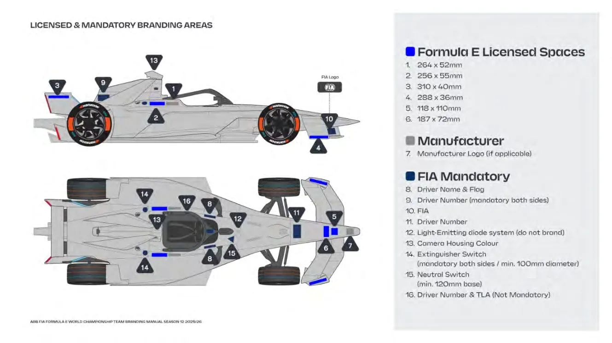
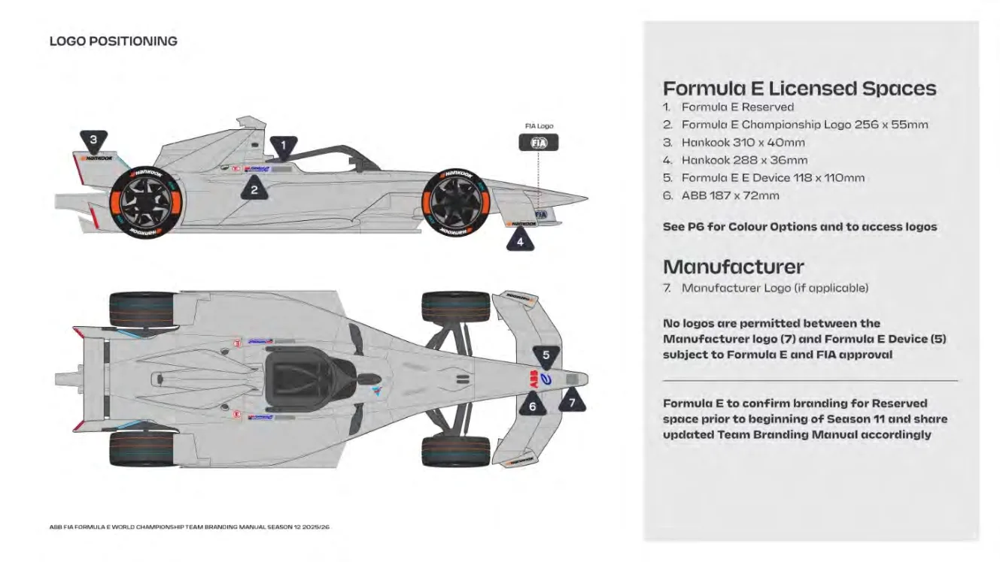
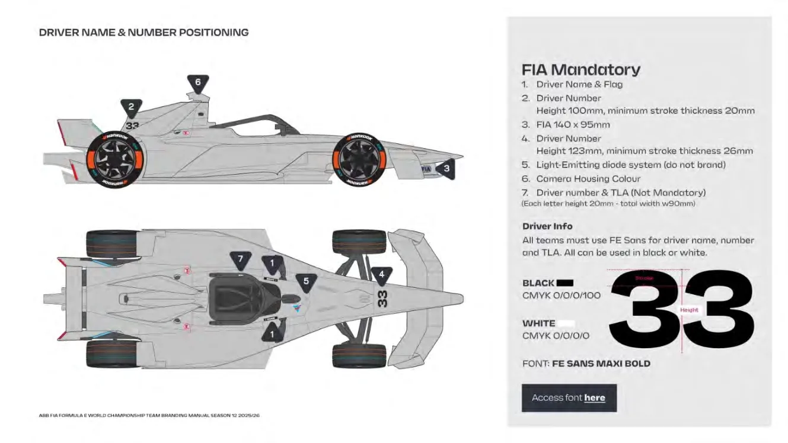
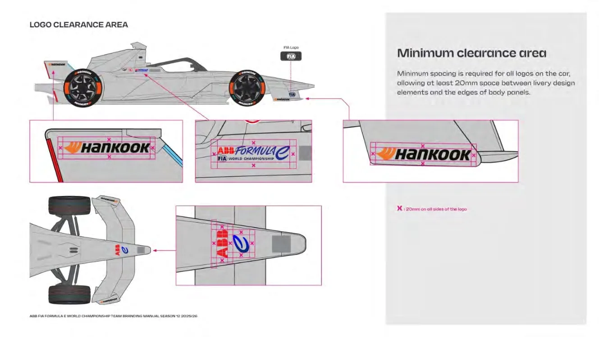
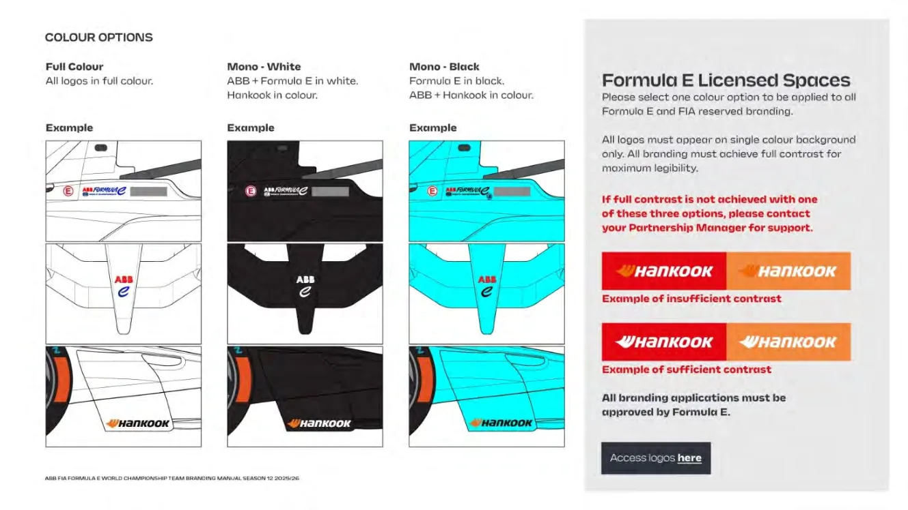
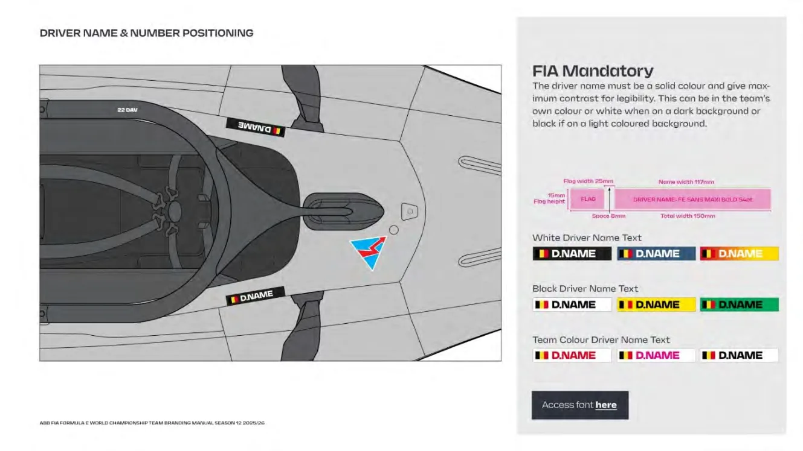
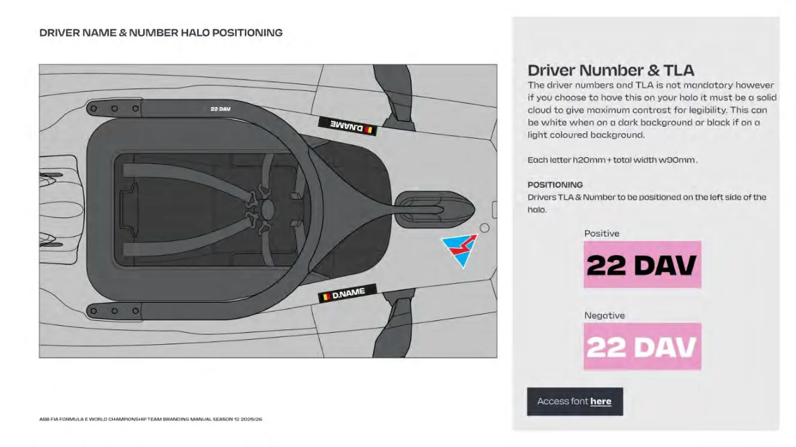
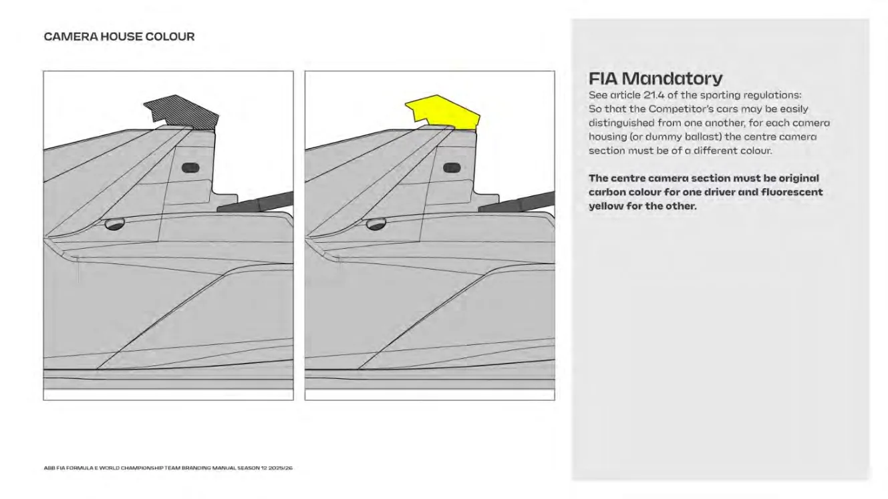
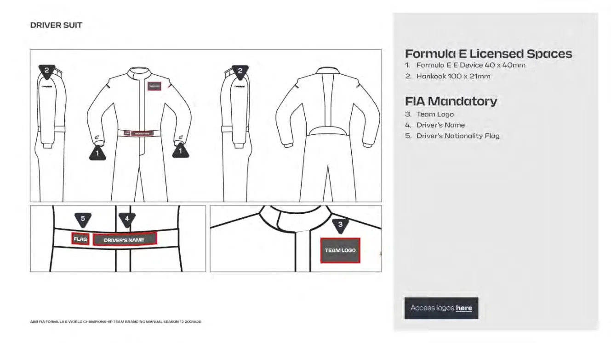
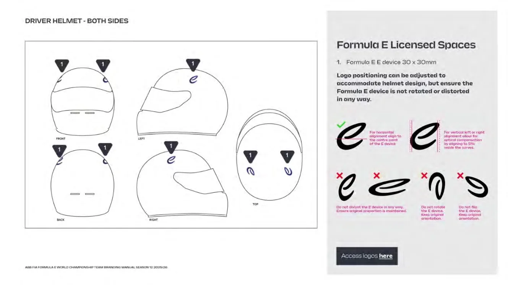
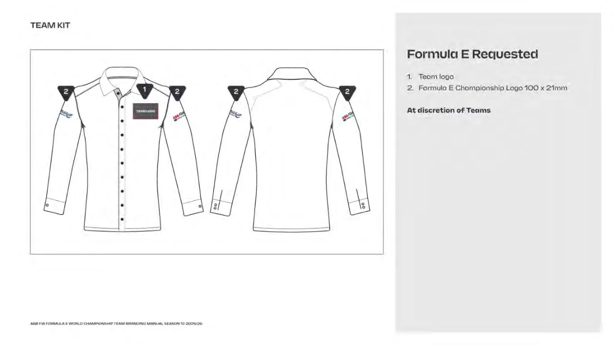
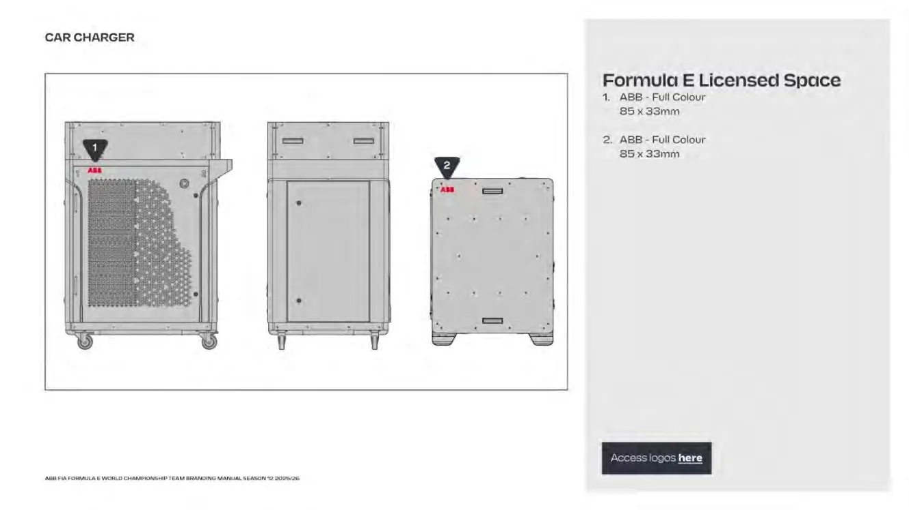
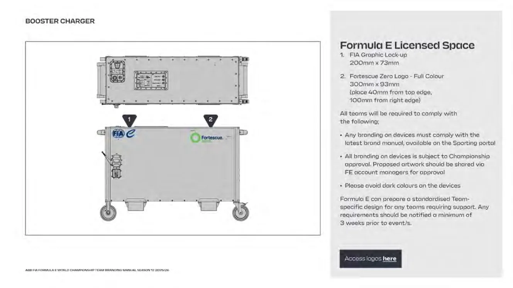

０５ コアカラー－ガレージのヘッダー、報道、デジタルに使用される第１次色および 第２次色それぞれ１色を提供のこと－第１次色および第２次色のデジタルRGB およびHEX コード－第１次色および第２次色の印刷CMYK コード０６ 車両外装－車両カラーリングは、.ai ファイルと.pdf ファイルの両方で提供のこと。 これには、特定レース競技会向けに特別に作成されたカラーリングも含まれる。－個々のスポンサーロゴのベクターファイル－ここに示されるアングルについて、グラフィックとロゴ配置の参照として、 我々が使用する写真を提供すること
・ポジティブCMYK ベクターロゴ・ネガティブCMYK ベクターロゴ・単色白CMYK ベクターロゴ・単色黒CMYK ベクターロゴ・該当する場合は、ポジティブ／ネガティブPANTONE ベクターロゴ－デジタル（SVG およびfPNG フォーマット）
・ポジティブRGB ベクターロゴ・ネガティブRGB ベクターロゴ・ポジティブRGB ラスターロゴ・ネガティブRGB ラスターロゴ・単色白RGB ベクターロゴ・単色白RGB ラスターロゴ・単色黒RGB ベクターロゴ・単色黒RGB ラスターロゴ０４ 省略ロゴ
すべてのフォントと文字幅がロゴファイルに概説されること ポジティブとは、白背景向けにデザインされたロゴを指す ネガティブとは、色付きまたは鮮明な背景向けにデザインされたロゴを指す
特定の縮小サイズの放送およびデジタル配置におけるロゴの読みやすさと認識の簡素化省略の例
・ポジティブRGB ベクターロゴ・ネガティブRGB ベクターロゴ・ポジティブRGB ラスターロゴ・ネガティブRGB ラスターロゴ・単色白RGB ベクターロゴ・単色白RGB ラスターロゴ・単色黒RGB ベクターロゴ・単色黒RGB ラスターロゴ
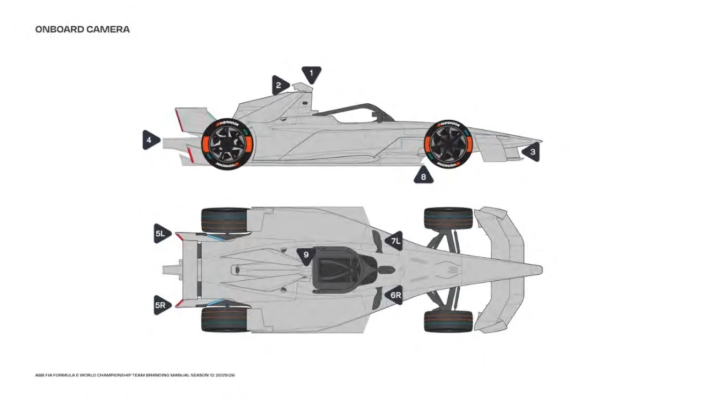
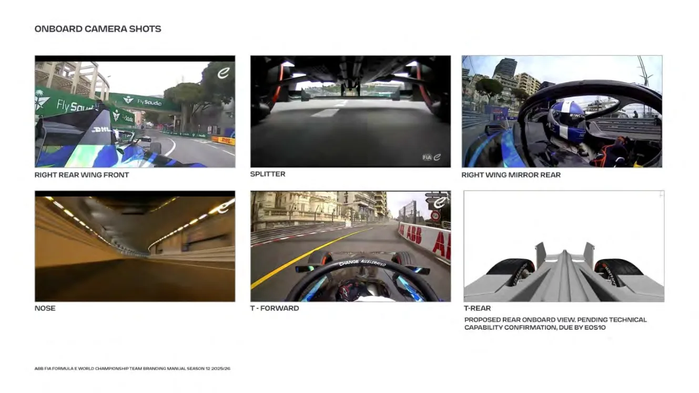
提案されるリアのオンボードビューEOS10 による技術能力の確認が保留中
![（図内）カスタム外装カスタム外装1. チームはシーズン中、特定のレースイベントについて、その外装を変更することが認められている。2. カスタム外装デザインはすべて、ブランディングマニュアルにあるガイドラインを遵守していなければならない。3. すべての外装デザインは、競技規則第２１条４項を遵守していなければならない。4. カスタム外装の計画は、レース日の４週間前に連絡されること。5. すべての外装デザインは、フォーミュラＥスポーティングマネージャーおよびチームのパートナーシップマネージャーを経由してフォーミュラＥおよびＦＩＡに承認されなければならない。6. イベントサイト、ウェブサイト、ソーシャル全体にわたるチームブランディングを特徴とするすべての主要資産は、シーズン前に承認された第１次色と第２次色のままになる。7. しかしながら、フォーミュラEは新たな外装を反映するために報道用3D車両グラフィックを更新する。チームは最新状態の3Dイラストをレース日の２週間前に提供しなければならない。要求されるファイルフォーマットについては、「Team Graphic Deliverables List（チームグラフィック提供物リスト）」を参照。（14ページ参照）8. ＴＶ放映用グラフィックのカスタム外装の更新料金・外装のフル更新：￡１,８００・スポンサー更新：￡９００](assets/fig-p0081-01.webp)
P.82付 則 ５
ATTACK MODE（アタックモード）
![（図内）アタックモードFIA ロガーに接続されたプッシュ ボタンを使用したドライバー起動システムアタックゾーンの最初のループまでの最大 5 秒のウィンドウレース中に最大5つのアーミングが可能AlkamelトランスポンダーNアタックループ１（id47）+ Nアタックループ２（id48）+ Nアタックループ３（id49）タイムスプリットシナリオ1～3ドライバーがステアリングホイールで選択し、CAN によって FIA ロガーに送信される最初にアクティベーションが成功したときに選択肢が凍結される最大1のアクティベーションレースの場合、このタイムスプリットシナリオの選択は無視される標準制御電力はPERSADC制御レベルに基づいて適用されるt ハイパワーモードタイマー = xxx 秒 (N ハイパワー時間シナリオによる) N High Power_Mode_Active = 1 PESADC_Control_Level=350kWレース中に最低 2 回のアクティベーションハイパワーモードタイマーが0秒になったときN High Power_Mode_Active = 0 PESADC_Control_Level=300kW FCYまたはSCの間、ｱﾀｯｸﾓｰﾄﾞﾙｰﾌﾟIDsは自動的に変更されるため（id47-48-49から7-8-9へ）、ｱﾀｯｸﾓｰﾄﾞを起動できなくなる。アタック モード ループがイエロー フラッグ状態で宣言されたセクター内にある場合、ループ ID も自動的に変更されるが、物理的なマーシャル フラッグはデジタル信号よりも優先される。したがって、イエロー フラッグ状態でアタック モードをアクティブにしないことは競技参加者の責任である。](assets/fig-p0082-01.webp)
最初の起動の前にどのタイムシナリオを望むかをドライバーは選ばなければならない。この選択はCANによりFIAロガーへ送られる。例： － シナリオ1：2＋6分－ シナリオ2：4＋4分－ シナリオ3：6＋2分最大1のアクティベーションが可能なレースの場合、このタイムスプリットシナリオの選択は無視され、イベントノートに記載されている時間がそのまま適用される。各レースにおけるアーミング回数、アクティベーション回数、およびタイムスプリットシナリオは、レース公式イベントノートに掲載される。
フリー走行セッションの間、ＦＩＡデータロガーは次のように常に設定される： －無制限のアーミング、－無制限のアクティベーション。－FIA ロガーが受信したシナリオに応じた起動時間これは、アタックモード戦略の起動にのみ関係する。 電力使用量に関して、競技参加者は RESS サプライヤーからの公式文書、《xxxxxx-FE GEN3 RESS Use Restrictions-S10 xxx.pdf》に従わなければならない。
「リマインダー: 上記の FIA の意見は本質的に助言であり、技術規則または競技規則を構成するものではない。この文書の内容はすべて厳密に非公開かつ機密であり、FIA とフォーミュラ E チームのみが使用する」
P.83付 則 ６ PASSES(パス)
![（図内）パス2024-2025年S11パスシステムパス、パスの枚数、カテゴリー、ガレージ内での車両アセンブリへの作業（要腕章）、ガレージ後ろの作業パーツ（要腕章）、ガレージ内でのラップトップ作業、走路が活動状態の時に制限エリアへの立ち入り（ガレージの前／テクニカルエリア）、ガレージアクセス作業エリアの前、ピットレーン立ち入り、グリッド立ち入り運営スタッフ／黄色掲載されている役割を別の色に割り当てることはできないメカニック、エンジニア、チームマネージャー、テクニカルディレクター、テクニカルマネージャー、スポーティングマネージャー、製造者支援、チーム代表、ロジスティクス、移動／チームコーディネーター、ドライバー支援、ＰＲ、チームメディア、ドクター、物理療法士非運営スタッフ／紫 観客席非運営チームスタッフ、スポンサーシップ、マーケティング、コマーシャル、ホステスゲスト／プラチナ ゲスト、作業実施は厳禁、リストバンドを付けていればyesゲスト青 ゲスト、作業実施は厳禁青 競技参加者向けでない、エージェンシースタッフ向け青 競技参加者向けでない、ラッピングスタッフ向け黄色 製造者代表、競技参加者向けでない赤 競技参加者向けではない（サプライヤーはオレンジ色の腕章）*ステッカー](assets/fig-p0083-01.webp)